Feature Heatmap
Usage
FeatureHeatmap(
srt,
features = NULL,
cells = NULL,
group.by = NULL,
split.by = NULL,
within_groups = FALSE,
max_cells = 100,
cell_order = NULL,
border = TRUE,
flip = FALSE,
layer = "counts",
assay = NULL,
exp_method = c("zscore", "raw", "fc", "log2fc", "log1p"),
exp_legend_title = NULL,
limits = NULL,
lib_normalize = identical(layer, "counts"),
libsize = NULL,
feature_split = NULL,
feature_split_by = NULL,
n_split = NULL,
split_order = NULL,
split_method = c("kmeans", "hclust", "mfuzz"),
decreasing = FALSE,
fuzzification = NULL,
cluster_features_by = NULL,
cluster_rows = FALSE,
cluster_columns = FALSE,
cluster_row_slices = FALSE,
cluster_column_slices = FALSE,
show_row_names = FALSE,
show_column_names = FALSE,
row_names_side = ifelse(flip, "left", "right"),
column_names_side = ifelse(flip, "bottom", "top"),
row_names_rot = 0,
column_names_rot = 90,
row_title = NULL,
column_title = NULL,
row_title_side = "left",
column_title_side = "top",
row_title_rot = 0,
column_title_rot = ifelse(flip, 90, 0),
anno_terms = FALSE,
anno_keys = FALSE,
anno_features = FALSE,
terms_width = grid::unit(4, "in"),
terms_fontsize = 8,
keys_width = grid::unit(2, "in"),
keys_fontsize = c(6, 10),
features_width = grid::unit(2, "in"),
features_fontsize = c(6, 10),
IDtype = "symbol",
species = "Homo_sapiens",
db_update = FALSE,
db_version = "latest",
db_combine = FALSE,
convert_species = FALSE,
Ensembl_version = 103,
mirror = NULL,
db = "GO_BP",
TERM2GENE = NULL,
TERM2NAME = NULL,
minGSSize = 10,
maxGSSize = 500,
GO_simplify = FALSE,
GO_simplify_cutoff = "p.adjust < 0.05",
simplify_method = "Wang",
simplify_similarityCutoff = 0.7,
pvalueCutoff = NULL,
padjustCutoff = 0.05,
topTerm = 5,
show_termid = FALSE,
topWord = 20,
words_excluded = NULL,
nlabel = 20,
features_label = NULL,
label_size = 10,
label_color = "black",
heatmap_palette = "RdBu",
heatmap_palcolor = NULL,
group_palette = "Paired",
group_palcolor = NULL,
cell_split_palette = "simspec",
cell_split_palcolor = NULL,
feature_split_palette = "simspec",
feature_split_palcolor = NULL,
cell_annotation = NULL,
cell_annotation_palette = "Paired",
cell_annotation_palcolor = NULL,
cell_annotation_params = if (flip) {
list(width = grid::unit(5, "mm"))
} else {
list(height = grid::unit(5, "mm"))
},
feature_annotation = NULL,
feature_annotation_palette = "Dark2",
feature_annotation_palcolor = NULL,
feature_annotation_params = if (flip) {
list(height = grid::unit(5, "mm"))
} else
{
list(width = grid::unit(5, "mm"))
},
use_raster = NULL,
raster_device = "png",
raster_by_magick = FALSE,
height = NULL,
width = NULL,
units = "inch",
seed = 11,
ht_params = list()
)Arguments
- srt
A Seurat object.
- features
The features to include in the heatmap. Default is NULL.
- cells
A character vector specifying the cells to include in the heatmap. Default is NULL.
- group.by
A character vector specifying the groups to group by. Default is NULL.
- split.by
A character vector specifying the variable to split the heatmap by. Default is NULL.
- within_groups
A logical value indicating whether to create separate heatmap scales for each group or within each group. Default is FALSE.
- max_cells
An integer, maximum number of cells to sample per group. Default is 100.
- cell_order
A vector of cell names defining the order of cells. Default is NULL.
- border
A logical value indicating whether to add a border to the heatmap. Default is TRUE.
- flip
A logical value indicating whether to flip the heatmap. Default is FALSE.
- layer
A character vector specifying the layer in the Seurat object to use. Default is "counts".
- assay
A character vector specifying the assay in the Seurat object to use. Default is NULL.
- exp_method
A character vector specifying the method for calculating expression values. Default is "zscore" with options "zscore", "raw", "fc", "log2fc", "log1p".
- exp_legend_title
A character vector specifying the title for the legend of expression value. Default is NULL.
- limits
A two-length numeric vector specifying the limits for the color scale. Default is NULL.
- lib_normalize
A logical value indicating whether to normalize the data by library size.
- libsize
A numeric vector specifying the library size for each cell. Default is NULL.
- feature_split
A factor specifying how to split the features. Default is NULL.
- feature_split_by
A character vector specifying which group.by to use when splitting features (into n_split feature clusters). Default is NULL.
- n_split
An integer specifying the number of feature splits (feature clusters) to create. Default is NULL.
- split_order
A numeric vector specifying the order of splits. Default is NULL.
- split_method
A character vector specifying the method for splitting features. Default is "kmeans" with options "kmeans", "hclust", "mfuzz").
- decreasing
A logical value indicating whether to sort feature splits in decreasing order. Default is FALSE.
- fuzzification
A numeric value specifying the fuzzification coefficient. Default is NULL.
- cluster_features_by
A character vector specifying which group.by to use when clustering features. Default is NULL. By default, this parameter is set to NULL, which means that all groups will be used.
- cluster_rows
A logical value indicating whether to cluster rows in the heatmap. Default is FALSE.
- cluster_columns
A logical value indicating whether to cluster columns in the heatmap. Default is FALSE.
- cluster_row_slices
A logical value indicating whether to cluster row slices in the heatmap. Default is FALSE.
- cluster_column_slices
A logical value indicating whether to cluster column slices in the heatmap. Default is FALSE.
- show_row_names
A logical value indicating whether to show row names in the heatmap. Default is FALSE.
- show_column_names
A logical value indicating whether to show column names in the heatmap. Default is FALSE.
- row_names_side
A character vector specifying the side to place row names.
- column_names_side
A character vector specifying the side to place column names.
- row_names_rot
A numeric value specifying the rotation angle for row names. Default is 0.
- column_names_rot
A numeric value specifying the rotation angle for column names. Default is 90.
- row_title
A character vector specifying the title for rows. Default is NULL.
- column_title
A character vector specifying the title for columns. Default is NULL.
- row_title_side
A character vector specifying the side to place row title. Default is "left".
- column_title_side
A character vector specifying the side to place column title. Default is "top".
- row_title_rot
A numeric value specifying the rotation angle for row title. Default is 0.
- column_title_rot
A numeric value specifying the rotation angle for column title.
- anno_terms
A logical value indicating whether to include term annotations. Default is FALSE.
- anno_keys
A logical value indicating whether to include key annotations. Default is FALSE.
- anno_features
A logical value indicating whether to include feature annotations. Default is FALSE.
- terms_width
A unit specifying the width of term annotations. Default is unit(4, "in").
- terms_fontsize
A numeric vector specifying the font size(s) for term annotations. Default is 8.
- keys_width
A unit specifying the width of key annotations. Default is unit(2, "in").
- keys_fontsize
A two-length numeric vector specifying the minimum and maximum font size(s) for key annotations. Default is c(6, 10).
- features_width
A unit specifying the width of feature annotations. Default is unit(2, "in").
- features_fontsize
A two-length numeric vector specifying the minimum and maximum font size(s) for feature annotations. Default is c(6, 10).
- IDtype
A character vector specifying the type of IDs for features. Default is "symbol".
- species
A character vector specifying the species for features. Default is "Homo_sapiens".
- db_update
A logical value indicating whether to update the database. Default is FALSE.
- db_version
A character vector specifying the version of the database. Default is "latest".
- db_combine
A logical value indicating whether to use a combined database. Default is FALSE.
- convert_species
A logical value indicating whether to use a species-converted database if annotation is missing for
species. Default is FALSE.- Ensembl_version
An integer specifying the Ensembl version. Default is 103.
- mirror
A character vector specifying the mirror for the Ensembl database. Default is NULL.
- db
A character vector specifying the database to use. Default is "GO_BP".
- TERM2GENE
A data.frame specifying the TERM2GENE mapping for the database. Default is NULL.
- TERM2NAME
A data.frame specifying the TERM2NAME mapping for the database. Default is NULL.
- minGSSize
An integer specifying the minimum gene set size for the database. Default is 10.
- maxGSSize
An integer specifying the maximum gene set size for the database. Default is 500.
- GO_simplify
A logical value indicating whether to simplify gene ontology terms. Default is FALSE.
- GO_simplify_cutoff
A character vector specifying the cutoff for GO simplification. Default is "p.adjust < 0.05".
- simplify_method
A character vector specifying the method for GO simplification. Default is "Wang".
- simplify_similarityCutoff
A numeric value specifying the similarity cutoff for GO simplification. Default is 0.7.
- pvalueCutoff
A numeric vector specifying the p-value cutoff(s) for significance. Default is NULL.
- padjustCutoff
A numeric value specifying the adjusted p-value cutoff for significance. Default is 0.05.
- topTerm
An integer specifying the number of top terms to include. Default is 5.
- show_termid
A logical value indicating whether to show term IDs. Default is FALSE.
- topWord
An integer specifying the number of top words to include. Default is 20.
- words_excluded
A character vector specifying the words to exclude. Default is NULL.
- nlabel
An integer specifying the number of labels to include. Default is 0.
- features_label
A character vector specifying the features to label. Default is NULL.
- label_size
A numeric value specifying the size of labels. Default is 10.
- label_color
A character vector specifying the color of labels. Default is "black".
- heatmap_palette
A character vector specifying the palette to use for the heatmap. Default is "RdBu".
- heatmap_palcolor
A character vector specifying the heatmap color to use. Default is NULL.
- group_palette
A character vector specifying the palette to use for groups. Default is "Paired".
- group_palcolor
A character vector specifying the group color to use. Default is NULL.
- cell_split_palette
A character vector specifying the palette to use for cell splits. Default is "simspec".
- cell_split_palcolor
A character vector specifying the cell split color to use. Default is NULL.
- feature_split_palette
A character vector specifying the palette to use for feature splits. Default is "simspec".
- feature_split_palcolor
A character vector specifying the feature split color to use. Default is NULL.
- cell_annotation
A character vector specifying the cell annotation(s) to include. Default is NULL.
- cell_annotation_palette
A character vector specifying the palette to use for cell annotations. The length of the vector should match the number of cell_annotation. Default is "Paired".
- cell_annotation_palcolor
A list of character vector specifying the cell annotation color(s) to use. The length of the list should match the number of cell_annotation. Default is NULL.
- cell_annotation_params
A list specifying additional parameters for cell annotations. Default is a list with width = unit(1, "cm") if flip is TRUE, else a list with height = unit(1, "cm").
- feature_annotation
A character vector specifying the feature annotation(s) to include. Default is NULL.
- feature_annotation_palette
A character vector specifying the palette to use for feature annotations. The length of the vector should match the number of feature_annotation. Default is "Dark2".
- feature_annotation_palcolor
A list of character vector specifying the feature annotation color to use. The length of the list should match the number of feature_annotation. Default is NULL.
- feature_annotation_params
A list specifying additional parameters for feature annotations. Default is an empty list.
- use_raster
A logical value indicating whether to use a raster device for plotting. Default is NULL.
- raster_device
A character vector specifying the raster device to use. Default is "png".
- raster_by_magick
A logical value indicating whether to use the 'magick' package for raster. Default is FALSE.
- height
A numeric vector specifying the height(s) of the heatmap body. Default is NULL.
- width
A numeric vector specifying the width(s) of the heatmap body. Default is NULL.
- units
A character vector specifying the units for the height and width. Default is "inch".
- seed
An integer specifying the random seed. Default is 11.
- ht_params
A list specifying additional parameters passed to the ComplexHeatmap::Heatmap function. Default is an empty list.
Examples
data(pancreas_sub)
pancreas_sub <- standard_scop(pancreas_sub)
#> ℹ [2025-09-09 14:12:36] Start standard scop workflow...
#> ℹ [2025-09-09 14:12:37] Checking a list of <Seurat> objects...
#> ! [2025-09-09 14:12:37] Data 1/1 of the `srt_list` is "unknown"
#> ℹ [2025-09-09 14:12:37] Perform `NormalizeData()` with `normalization.method = 'LogNormalize'` on the data 1/1 of the `srt_list`...
#> ℹ [2025-09-09 14:12:39] Perform `Seurat::FindVariableFeatures()` on the data 1/1 of the `srt_list`...
#> ℹ [2025-09-09 14:12:39] Use the separate HVF from srt_list
#> ℹ [2025-09-09 14:12:39] Number of available HVF: 2000
#> ℹ [2025-09-09 14:12:40] Finished check
#> ℹ [2025-09-09 14:12:40] Perform `Seurat::ScaleData()` on the data...
#> Warning: Different features in new layer data than already exists for scale.data
#> ℹ [2025-09-09 14:12:40] Perform pca linear dimension reduction on the data...
#> StandardPC_ 1
#> Positive: Aplp1, Cpe, Gnas, Fam183b, Map1b, Hmgn3, Pcsk1n, Chga, Tuba1a, Bex2
#> Syt13, Isl1, 1700086L19Rik, Pax6, Chgb, Scgn, Rbp4, Scg3, Gch1, Camk2n1
#> Cryba2, Pcsk2, Pyy, Tspan7, Mafb, Hist3h2ba, Dbpht2, Abcc8, Rap1b, Slc38a5
#> Negative: Spp1, Anxa2, Sparc, Dbi, 1700011H14Rik, Wfdc2, Gsta3, Adamts1, Clu, Mgst1
#> Bicc1, Ldha, Vim, Cldn3, Cyr61, Rps2, Mt1, Ptn, Phgdh, Nudt19
#> Smtnl2, Smco4, Habp2, Mt2, Col18a1, Rpl12, Galk1, Cldn10, Acot1, Ccnd1
#> StandardPC_ 2
#> Positive: Rbp4, Tagln2, Tuba1b, Fkbp2, Pyy, Pcsk2, Iapp, Tmem27, Meis2, Tubb4b
#> Pcsk1n, Dbpht2, Rap1b, Dynll1, Tubb2a, Sdf2l1, Scgn, 1700086L19Rik, Scg2, Abcc8
#> Atp1b1, Hspa5, Fam183b, Papss2, Slc38a5, Scg3, Mageh1, Tspan7, Ppp1r1a, Ociad2
#> Negative: Neurog3, Btbd17, Gadd45a, Ppp1r14a, Neurod2, Sox4, Smarcd2, Mdk, Pax4, Btg2
#> Sult2b1, Hes6, Grasp, Igfbpl1, Gpx2, Cbfa2t3, Foxa3, Shf, Mfng, Tmsb4x
#> Amotl2, Gdpd1, Cdc14b, Epb42, Rcor2, Cotl1, Upk3bl, Rbfox3, Cldn6, Cer1
#> StandardPC_ 3
#> Positive: Nusap1, Top2a, Birc5, Aurkb, Cdca8, Pbk, Mki67, Tpx2, Plk1, Ccnb1
#> 2810417H13Rik, Incenp, Cenpf, Ccna2, Prc1, Racgap1, Cdk1, Aurka, Cdca3, Hmmr
#> Spc24, Kif23, Sgol1, Cenpe, Cdc20, Hist1h1b, Cdca2, Mxd3, Kif22, Ska1
#> Negative: Anxa5, Pdzk1ip1, Acot1, Tpm1, Anxa2, Dcdc2a, Capg, Sparc, Ttr, Pamr1
#> Clu, Cxcl12, Ndrg2, Hnf1aos1, Gas6, Gsta3, Krt18, Ces1d, Atp1b1, Muc1
#> Hhex, Acadm, Spp1, Enpp2, Bcl2l14, Sat1, Smtnl2, 1700011H14Rik, Tgm2, Fam159a
#> StandardPC_ 4
#> Positive: Glud1, Tm4sf4, Akr1c19, Cldn4, Runx1t1, Fev, Pou3f4, Gm43861, Pgrmc1, Arx
#> Cd200, Lrpprc, Hmgn3, Ppp1r14c, Pam, Etv1, Tsc22d1, Slc25a5, Akap17b, Pgf
#> Fam43a, Emb, Jun, Krt8, Dnajc12, Mid1ip1, Ids, Rgs17, Uchl1, Alcam
#> Negative: Ins2, Ins1, Ppp1r1a, Nnat, Calr, Sytl4, Sdf2l1, Iapp, Pdia6, Mapt
#> G6pc2, C2cd4b, Npy, Gng12, P2ry1, Ero1lb, Adra2a, Papss2, Arhgap36, Fam151a
#> Dlk1, Creld2, Gip, Tmem215, Gm27033, Cntfr, Prss53, C2cd4a, Lyve1, Ociad2
#> StandardPC_ 5
#> Positive: Pdx1, Nkx6-1, Npepl1, Cldn4, Cryba2, Fev, Jun, Chgb, Gng12, Adra2a
#> Mnx1, Sytl4, Pdk3, Gm27033, Nnat, Chga, Ins2, 1110012L19Rik, Enho, Krt7
#> Mlxipl, Tmsb10, Flrt1, Pax4, Tubb3, Prrg2, Gars, Frzb, BC023829, Gm2694
#> Negative: Irx2, Irx1, Gcg, Ctxn2, Tmem27, Ctsz, Tmsb15l, Nap1l5, Pou6f2, Gria2
#> Ghrl, Peg10, Smarca1, Arx, Lrpap1, Rgs4, Ttr, Gast, Tmsb15b2, Serpina1b
#> Slc16a10, Wnk3, Ly6e, Auts2, Sct, Arg1, Dusp10, Sphkap, Dock11, Edn3
#> ℹ [2025-09-09 14:12:41] Perform `Seurat::FindClusters()` with louvain and `cluster_resolution` = 0.6 on the data...
#> ℹ [2025-09-09 14:12:41] Reorder clusters...
#> ! [2025-09-09 14:12:41] Using `Seurat::AggregateExpression()` to calculate pseudo-bulk data for <Assay5>
#> ℹ [2025-09-09 14:12:41] Perform umap nonlinear dimension reduction on the data...
#> ℹ [2025-09-09 14:12:41] Non-linear dimensionality reduction (umap) using (Standardpca) dims (1-50) as input
#> ℹ [2025-09-09 14:12:45] Non-linear dimensionality reduction (umap) using (Standardpca) dims (1-50) as input
#> ✔ [2025-09-09 14:12:49] Run scop standard workflow done
pancreas_sub <- RunDEtest(
pancreas_sub,
group_by = "CellType"
)
#> ℹ [2025-09-09 14:12:49] Installing package: presto...
#>
#> → Will install 2 packages.
#> → All 2 packages (0 B) are cached.
#> + RcppArmadillo 15.0.2-1
#> + presto 1.0.0 [bld][cmp] (GitHub: 7636b3d)
#> ✔ All system requirements are already installed.
#>
#> ℹ No downloads are needed, 2 pkgs are cached
#> ✔ Got presto 1.0.0 (source) (746.05 kB)
#> ℹ Installing system requirements
#> ℹ Executing `sudo sh -c apt-get -y update`
#> Get:1 file:/etc/apt/apt-mirrors.txt Mirrorlist [144 B]
#> Hit:2 http://azure.archive.ubuntu.com/ubuntu noble InRelease
#> Hit:6 https://packages.microsoft.com/repos/azure-cli noble InRelease
#> Hit:3 http://azure.archive.ubuntu.com/ubuntu noble-updates InRelease
#> Hit:7 https://packages.microsoft.com/ubuntu/24.04/prod noble InRelease
#> Hit:4 http://azure.archive.ubuntu.com/ubuntu noble-backports InRelease
#> Hit:5 http://azure.archive.ubuntu.com/ubuntu noble-security InRelease
#> Reading package lists...
#> ℹ Executing `sudo sh -c apt-get -y install libicu-dev`
#> Reading package lists...
#> Building dependency tree...
#> Reading state information...
#> libicu-dev is already the newest version (74.2-1ubuntu3.1).
#> 0 upgraded, 0 newly installed, 0 to remove and 20 not upgraded.
#> ✔ Installed RcppArmadillo 15.0.2-1 (1.2s)
#> ℹ Packaging presto 1.0.0
#> ✔ Packaged presto 1.0.0 (675ms)
#> ℹ Building presto 1.0.0
#> ✔ Built presto 1.0.0 (12.6s)
#> ✔ Installed presto 1.0.0 (github::immunogenomics/presto@7636b3d) (1s)
#> ✔ 1 pkg + 24 deps: kept 22, added 2, dld 1 (NA B) [20s]
#> ℹ [2025-09-09 14:13:09] All packages installed successfully
#> ℹ [2025-09-09 14:13:09] Data type is log-normalized
#> ℹ [2025-09-09 14:13:09] Start differential expression test
#> Warning: The `slot` argument of `Assays()` is deprecated as of SeuratObject 5.0.0.
#> ℹ Please use `LayerData()` instead.
#> ℹ The deprecated feature was likely used in the scop package.
#> Please report the issue at <https://github.com/mengxu98/scop/issues>.
#> ℹ [2025-09-09 14:13:09] Find all markers(wilcox) among 5 groups...
#> ℹ [2025-09-09 14:13:09] Using 1 core
#> Warning: The `slot` argument of `GetAssayData()` is deprecated as of SeuratObject 5.0.0.
#> ℹ Please use the `layer` argument instead.
#> ℹ The deprecated feature was likely used in the Seurat package.
#> Please report the issue at <https://github.com/satijalab/seurat/issues>.
#> Warning: `PackageCheck()` was deprecated in SeuratObject 5.0.0.
#> ℹ Please use `rlang::check_installed()` instead.
#> ℹ The deprecated feature was likely used in the Seurat package.
#> Please report the issue at <https://github.com/satijalab/seurat/issues>.
#> ⠙ [2025-09-09 14:13:09] Running [1/5] ETA: 1s
#> ✔ [2025-09-09 14:13:09] Completed 5 tasks in 1.1s
#>
#> ℹ [2025-09-09 14:13:10] Building results
#> ✔ [2025-09-09 14:13:10] Differential expression test completed
pancreas_sub <- AnnotateFeatures(
pancreas_sub,
species = "Mus_musculus",
db = c("CSPA", "TF")
)
#> ℹ [2025-09-09 14:13:10] Species: Mus_musculus
#> ℹ [2025-09-09 14:13:10] Preparing database: TF
#> ℹ [2025-09-09 14:13:12] Error in utils::download.file(url = url, destfile = destfile, method = method, : cannot open URL 'https://guolab.wchscu.cn/AnimalTFDB4_static/download/TF_list_final/Mus_musculus_TF'
#> ! [2025-09-09 14:13:12] Cannot download from the url: <https://guolab.wchscu.cn/AnimalTFDB4_static/download/TF_list_final/Mus_musculus_TF>
#> ! [2025-09-09 14:13:12] Failed to download using "auto"
#> ℹ [2025-09-09 14:13:14] Error in utils::download.file(url = url, destfile = destfile, method = method, : 'wget' call had nonzero exit status
#> ! [2025-09-09 14:13:14] Cannot download from the url: <https://guolab.wchscu.cn/AnimalTFDB4_static/download/TF_list_final/Mus_musculus_TF>
#> ! [2025-09-09 14:13:14] Failed to download using "wget"
#> ℹ [2025-09-09 14:13:16] Error in utils::download.file(url = url, destfile = destfile, method = method, : cannot open URL 'https://guolab.wchscu.cn/AnimalTFDB4_static/download/TF_list_final/Mus_musculus_TF'
#> ! [2025-09-09 14:13:16] Cannot download from the url: <https://guolab.wchscu.cn/AnimalTFDB4_static/download/TF_list_final/Mus_musculus_TF>
#> ! [2025-09-09 14:13:16] Failed to download using "libcurl"
#> Warning: incomplete final line found by readTableHeader on '/tmp/RtmpFh70D9/filea8cece95641'
#> ℹ [2025-09-09 14:13:20] Error in utils::download.file(url = url, destfile = destfile, method = method, : cannot open URL 'https://guolab.wchscu.cn/AnimalTFDB4_static/download/Cof_list_final/Mus_musculus_Cof'
#> ! [2025-09-09 14:13:20] Cannot download from the url: <https://guolab.wchscu.cn/AnimalTFDB4_static/download/Cof_list_final/Mus_musculus_Cof>
#> ! [2025-09-09 14:13:20] Failed to download using "auto"
#> ℹ [2025-09-09 14:13:22] Error in utils::download.file(url = url, destfile = destfile, method = method, : 'wget' call had nonzero exit status
#> ! [2025-09-09 14:13:22] Cannot download from the url: <https://guolab.wchscu.cn/AnimalTFDB4_static/download/Cof_list_final/Mus_musculus_Cof>
#> ! [2025-09-09 14:13:22] Failed to download using "wget"
#> ℹ [2025-09-09 14:13:24] Error in utils::download.file(url = url, destfile = destfile, method = method, : cannot open URL 'https://guolab.wchscu.cn/AnimalTFDB4_static/download/Cof_list_final/Mus_musculus_Cof'
#> ! [2025-09-09 14:13:24] Cannot download from the url: <https://guolab.wchscu.cn/AnimalTFDB4_static/download/Cof_list_final/Mus_musculus_Cof>
#> ! [2025-09-09 14:13:24] Failed to download using "libcurl"
#> Warning: incomplete final line found by readTableHeader on '/tmp/RtmpFh70D9/filea8cece95641'
#> ! [2025-09-09 14:13:26] Use the human annotation to create the TF database for Mus_musculus
#> ℹ [2025-09-09 14:13:28] Error in utils::download.file(url = url, destfile = destfile, method = method, : cannot open URL 'https://guolab.wchscu.cn/AnimalTFDB4_static/download/TF_list_final/Homo_sapiens_TF'
#> ! [2025-09-09 14:13:28] Cannot download from the url: <https://guolab.wchscu.cn/AnimalTFDB4_static/download/TF_list_final/Homo_sapiens_TF>
#> ! [2025-09-09 14:13:28] Failed to download using "auto"
#> ℹ [2025-09-09 14:13:30] Error in utils::download.file(url = url, destfile = destfile, method = method, : 'wget' call had nonzero exit status
#> ! [2025-09-09 14:13:30] Cannot download from the url: <https://guolab.wchscu.cn/AnimalTFDB4_static/download/TF_list_final/Homo_sapiens_TF>
#> ! [2025-09-09 14:13:30] Failed to download using "wget"
#> ℹ [2025-09-09 14:13:32] Error in utils::download.file(url = url, destfile = destfile, method = method, : cannot open URL 'https://guolab.wchscu.cn/AnimalTFDB4_static/download/TF_list_final/Homo_sapiens_TF'
#> ! [2025-09-09 14:13:32] Cannot download from the url: <https://guolab.wchscu.cn/AnimalTFDB4_static/download/TF_list_final/Homo_sapiens_TF>
#> ! [2025-09-09 14:13:32] Failed to download using "libcurl"
#> Warning: incomplete final line found by readTableHeader on '/tmp/RtmpFh70D9/filea8cece95641'
#> ℹ [2025-09-09 14:13:35] Error in utils::download.file(url = url, destfile = destfile, method = method, : cannot open URL 'https://guolab.wchscu.cn/AnimalTFDB4_static/download/Cof_list_final/Homo_sapiens_Cof'
#> ! [2025-09-09 14:13:35] Cannot download from the url: <https://guolab.wchscu.cn/AnimalTFDB4_static/download/Cof_list_final/Homo_sapiens_Cof>
#> ! [2025-09-09 14:13:35] Failed to download using "auto"
#> ℹ [2025-09-09 14:13:37] Error in utils::download.file(url = url, destfile = destfile, method = method, : 'wget' call had nonzero exit status
#> ! [2025-09-09 14:13:37] Cannot download from the url: <https://guolab.wchscu.cn/AnimalTFDB4_static/download/Cof_list_final/Homo_sapiens_Cof>
#> ! [2025-09-09 14:13:37] Failed to download using "wget"
#> ℹ [2025-09-09 14:13:40] Error in utils::download.file(url = url, destfile = destfile, method = method, : cannot open URL 'https://guolab.wchscu.cn/AnimalTFDB4_static/download/Cof_list_final/Homo_sapiens_Cof'
#> ! [2025-09-09 14:13:40] Cannot download from the url: <https://guolab.wchscu.cn/AnimalTFDB4_static/download/Cof_list_final/Homo_sapiens_Cof>
#> ! [2025-09-09 14:13:40] Failed to download using "libcurl"
#> Warning: incomplete final line found by readTableHeader on '/tmp/RtmpFh70D9/filea8cece95641'
#> Error in data.frame(Term = "TF", symbol = tf[["Symbol"]]): arguments imply differing number of rows: 1, 0
de_filter <- dplyr::filter(
pancreas_sub@tools$DEtest_CellType$AllMarkers_wilcox,
p_val_adj < 0.05 & avg_log2FC > 1
)
ht1 <- FeatureHeatmap(
pancreas_sub,
features = de_filter$gene,
group.by = "CellType",
split.by = "Phase",
cell_split_palette = "Dark2"
)
#> 'magick' package is suggested to install to give better rasterization.
#>
#> Set `ht_opt$message = FALSE` to turn off this message.
#> `use_raster` is automatically set to TRUE for a matrix with more than
#> 2000 rows. You can control `use_raster` argument by explicitly setting
#> TRUE/FALSE to it.
#>
#> Set `ht_opt$message = FALSE` to turn off this message.
ht1$plot
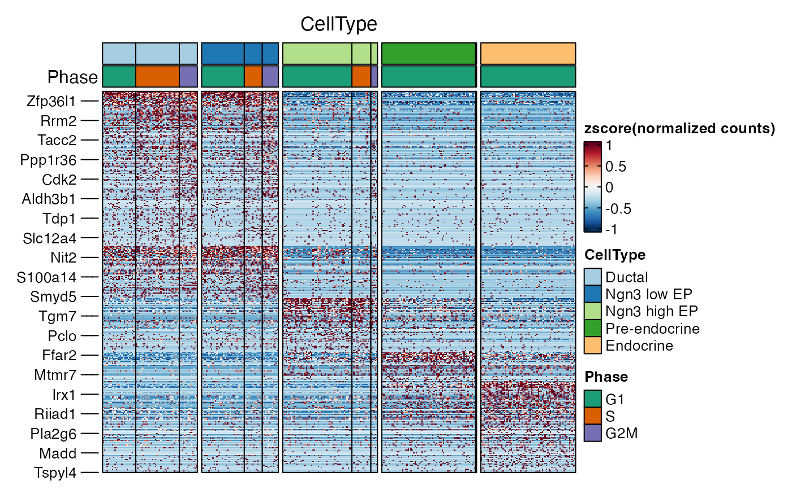
panel_fix(
ht1$plot,
height = 4,
width = 6,
raster = TRUE,
dpi = 50
)
#> ℹ [2025-09-09 14:13:47] Installing package: png...
#>
#> ✔ All system requirements are already installed.
#>
#> ℹ No downloads are needed
#> ℹ Installing system requirements
#> ℹ Executing `sudo sh -c apt-get -y update`
#> Get:1 file:/etc/apt/apt-mirrors.txt Mirrorlist [144 B]
#> Hit:6 https://packages.microsoft.com/repos/azure-cli noble InRelease
#> Hit:7 https://packages.microsoft.com/ubuntu/24.04/prod noble InRelease
#> Hit:2 http://azure.archive.ubuntu.com/ubuntu noble InRelease
#> Hit:3 http://azure.archive.ubuntu.com/ubuntu noble-updates InRelease
#> Hit:4 http://azure.archive.ubuntu.com/ubuntu noble-backports InRelease
#> Hit:5 http://azure.archive.ubuntu.com/ubuntu noble-security InRelease
#> Reading package lists...
#> ℹ Executing `sudo sh -c apt-get -y install libpng-dev`
#> Reading package lists...
#> Building dependency tree...
#> Reading state information...
#> libpng-dev is already the newest version (1.6.43-5build1).
#> 0 upgraded, 0 newly installed, 0 to remove and 20 not upgraded.
#> ✔ 1 pkg: kept 1 [2.3s]
#> ℹ [2025-09-09 14:13:49] Installing package: ragg...
#>
#> ✔ All system requirements are already installed.
#>
#> ℹ No downloads are needed
#> ℹ Installing system requirements
#> ℹ Executing `sudo sh -c apt-get -y update`
#> Get:1 file:/etc/apt/apt-mirrors.txt Mirrorlist [144 B]
#> Hit:2 http://azure.archive.ubuntu.com/ubuntu noble InRelease
#> Hit:3 http://azure.archive.ubuntu.com/ubuntu noble-updates InRelease
#> Hit:4 http://azure.archive.ubuntu.com/ubuntu noble-backports InRelease
#> Hit:5 http://azure.archive.ubuntu.com/ubuntu noble-security InRelease
#> Hit:6 https://packages.microsoft.com/repos/azure-cli noble InRelease
#> Hit:7 https://packages.microsoft.com/ubuntu/24.04/prod noble InRelease
#> Reading package lists...
#> ℹ Executing `sudo sh -c apt-get -y install libfreetype6-dev libjpeg-dev libpng-dev libtiff-dev libwebp-dev libicu-dev libfontconfig1-dev libfribidi-dev libharfbuzz-dev`
#> Reading package lists...
#> Building dependency tree...
#> Reading state information...
#> libfreetype-dev is already the newest version (2.13.2+dfsg-1build3).
#> libjpeg-dev is already the newest version (8c-2ubuntu11).
#> libpng-dev is already the newest version (1.6.43-5build1).
#> libtiff-dev is already the newest version (4.5.1+git230720-4ubuntu2.3).
#> libwebp-dev is already the newest version (1.3.2-0.4build3).
#> libicu-dev is already the newest version (74.2-1ubuntu3.1).
#> libfontconfig1-dev is already the newest version (2.15.0-1.1ubuntu2).
#> libfribidi-dev is already the newest version (1.0.13-3build1).
#> libharfbuzz-dev is already the newest version (8.3.0-2build2).
#> 0 upgraded, 0 newly installed, 0 to remove and 20 not upgraded.
#> ✔ 1 pkg + 9 deps: kept 10 [2.6s]
#> ℹ [2025-09-09 14:13:52] All packages installed successfully
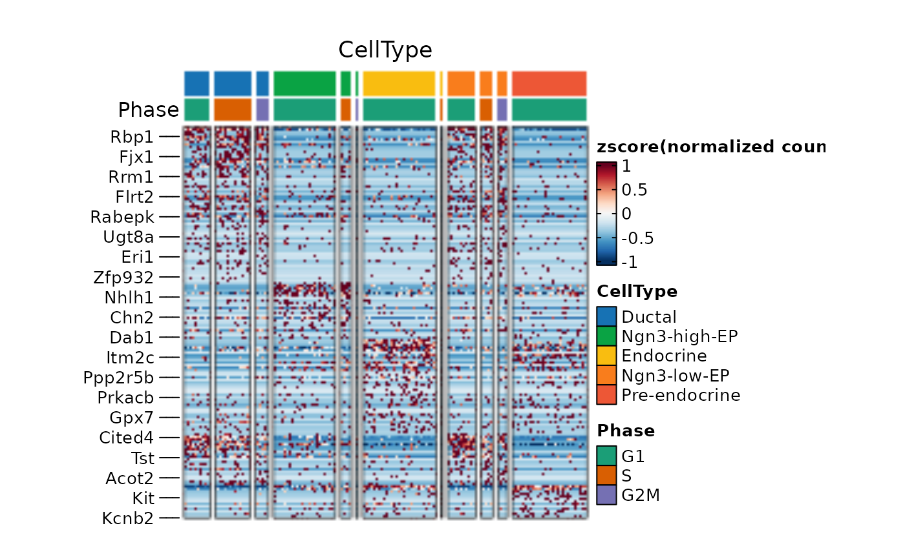
ht2 <- FeatureHeatmap(
pancreas_sub,
features = de_filter$gene,
group.by = c("CellType", "SubCellType"),
n_split = 4,
cluster_rows = TRUE,
cluster_row_slices = TRUE,
cluster_columns = TRUE,
cluster_column_slices = TRUE,
ht_params = list(row_gap = grid::unit(0, "mm"))
)
#> 'magick' package is suggested to install to give better rasterization.
#>
#> Set `ht_opt$message = FALSE` to turn off this message.
#> `use_raster` is automatically set to TRUE for a matrix with more than
#> 2000 rows. You can control `use_raster` argument by explicitly setting
#> TRUE/FALSE to it.
#>
#> Set `ht_opt$message = FALSE` to turn off this message.
#> `use_raster` is automatically set to TRUE for a matrix with more than
#> 2000 rows. You can control `use_raster` argument by explicitly setting
#> TRUE/FALSE to it.
#>
#> Set `ht_opt$message = FALSE` to turn off this message.
#> ℹ [2025-09-09 14:14:00] The size of the heatmap is fixed because certain elements are not scalable.
#> ℹ [2025-09-09 14:14:00] The width and height of the heatmap are determined by the size of the current viewport.
#> ℹ [2025-09-09 14:14:00] If you want to have more control over the size, you can manually set the parameters 'width' and 'height'.
 ht2$plot
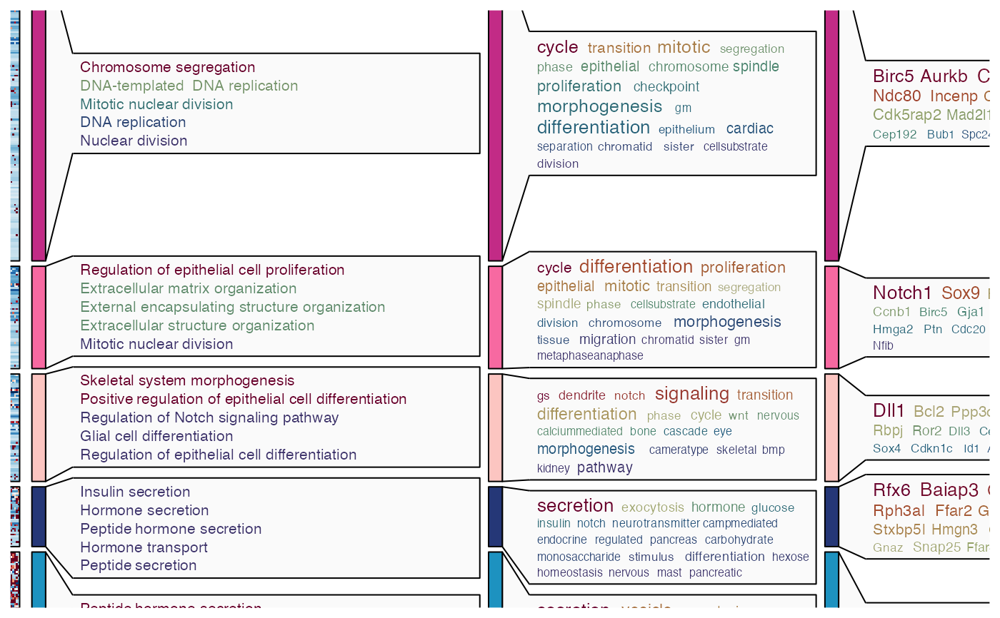
ht3 <- FeatureHeatmap(
pancreas_sub,
features = de_filter$gene,
feature_split = de_filter$group1,
group.by = "CellType",
species = "Mus_musculus",
db = "GO_BP",
anno_terms = TRUE,
anno_keys = TRUE,
anno_features = TRUE
)
#> 'magick' package is suggested to install to give better rasterization.
#>
#> Set `ht_opt$message = FALSE` to turn off this message.
#> ℹ [2025-09-09 14:14:29] Start Enrichment analysis
#> ℹ [2025-09-09 14:14:29] Installing package: clusterProfiler...
#>
#> ✔ All system requirements are already installed.
#>
#> ℹ No downloads are needed
#> ℹ Installing system requirements
#> ℹ Executing `sudo sh -c apt-get -y update`
#> Get:1 file:/etc/apt/apt-mirrors.txt Mirrorlist [144 B]
#> Hit:2 http://azure.archive.ubuntu.com/ubuntu noble InRelease
#> Hit:3 http://azure.archive.ubuntu.com/ubuntu noble-updates InRelease
#> Hit:4 http://azure.archive.ubuntu.com/ubuntu noble-backports InRelease
#> Hit:5 http://azure.archive.ubuntu.com/ubuntu noble-security InRelease
#> Hit:6 https://packages.microsoft.com/repos/azure-cli noble InRelease
#> Hit:7 https://packages.microsoft.com/ubuntu/24.04/prod noble InRelease
#> Reading package lists...
#> ℹ Executing `sudo sh -c apt-get -y install libcurl4-openssl-dev libssl-dev make libglpk-dev libxml2-dev libpng-dev libicu-dev libfontconfig1-dev libfreetype6-dev`
#> Reading package lists...
#> Building dependency tree...
#> Reading state information...
#> libcurl4-openssl-dev is already the newest version (8.5.0-2ubuntu10.6).
#> libssl-dev is already the newest version (3.0.13-0ubuntu3.5).
#> make is already the newest version (4.3-4.1build2).
#> libglpk-dev is already the newest version (5.0-1build2).
#> libxml2-dev is already the newest version (2.9.14+dfsg-1.3ubuntu3.4).
#> libpng-dev is already the newest version (1.6.43-5build1).
#> libicu-dev is already the newest version (74.2-1ubuntu3.1).
#> libfontconfig1-dev is already the newest version (2.15.0-1.1ubuntu2).
#> libfreetype-dev is already the newest version (2.13.2+dfsg-1build3).
#> 0 upgraded, 0 newly installed, 0 to remove and 20 not upgraded.
#> ✔ 1 pkg + 107 deps: kept 107 [5s]
#> ℹ [2025-09-09 14:14:34] All packages installed successfully
#> ℹ [2025-09-09 14:14:34] Species: Mus_musculus
#> ℹ [2025-09-09 14:14:34] Loading cached: GO_BP version: 3.21.0 nterm:15445 created: "2025-09-09 14:07:56"
#> ℹ [2025-09-09 14:14:35] Permform enrichment...
#> ℹ [2025-09-09 14:14:36] Using 1 core
#> ⠙ [2025-09-09 14:14:36] Running [1/5] ETA: 1m
#> ⠹ [2025-09-09 14:14:36] Running [2/5] ETA: 46s
#> ⠸ [2025-09-09 14:14:36] Running [3/5] ETA: 30s
#> ⠼ [2025-09-09 14:14:36] Running [4/5] ETA: 15s
#> ✔ [2025-09-09 14:14:36] Completed 5 tasks in 1m 10.2s
#>
#> ℹ [2025-09-09 14:15:46] Building results
#> ✔ [2025-09-09 14:15:46] Enrichment analysis done
#> ℹ [2025-09-09 14:15:46] Installing package: simplifyEnrichment...
#>
#> → Will install 1 system package:
#> + default-jdk - simona
#> ℹ No downloads are needed
#> ℹ Installing system requirements
#> ℹ Executing `sudo sh -c apt-get -y update`
#> Get:1 file:/etc/apt/apt-mirrors.txt Mirrorlist [144 B]
#> Hit:2 http://azure.archive.ubuntu.com/ubuntu noble InRelease
#> Hit:6 https://packages.microsoft.com/repos/azure-cli noble InRelease
#> Hit:7 https://packages.microsoft.com/ubuntu/24.04/prod noble InRelease
#> Hit:3 http://azure.archive.ubuntu.com/ubuntu noble-updates InRelease
#> Hit:4 http://azure.archive.ubuntu.com/ubuntu noble-backports InRelease
#> Hit:5 http://azure.archive.ubuntu.com/ubuntu noble-security InRelease
#> Reading package lists...
#> ℹ Executing `sudo sh -c apt-get -y install perl libcurl4-openssl-dev libssl-dev make zlib1g-dev libglpk-dev libxml2-dev libpng-dev default-jdk`
#> Reading package lists...
#> Building dependency tree...
#> Reading state information...
#> perl is already the newest version (5.38.2-3.2ubuntu0.2).
#> libcurl4-openssl-dev is already the newest version (8.5.0-2ubuntu10.6).
#> libssl-dev is already the newest version (3.0.13-0ubuntu3.5).
#> make is already the newest version (4.3-4.1build2).
#> zlib1g-dev is already the newest version (1:1.3.dfsg-3.1ubuntu2.1).
#> libglpk-dev is already the newest version (5.0-1build2).
#> libxml2-dev is already the newest version (2.9.14+dfsg-1.3ubuntu3.4).
#> libpng-dev is already the newest version (1.6.43-5build1).
#> The following additional packages will be installed:
#> ca-certificates-java default-jdk-headless default-jre default-jre-headless
#> libatk-wrapper-java libatk-wrapper-java-jni libpcsclite1 libxcb-shape0
#> libxt-dev libxv1 libxxf86dga1 openjdk-21-jdk openjdk-21-jdk-headless
#> openjdk-21-jre openjdk-21-jre-headless x11-utils
#> Suggested packages:
#> pcscd libxt-doc openjdk-21-demo openjdk-21-source visualvm libnss-mdns
#> fonts-ipafont-gothic fonts-ipafont-mincho fonts-wqy-microhei
#> | fonts-wqy-zenhei fonts-indic mesa-utils
#> Recommended packages:
#> luit
#> The following NEW packages will be installed:
#> ca-certificates-java default-jdk default-jdk-headless default-jre
#> default-jre-headless libatk-wrapper-java libatk-wrapper-java-jni
#> libpcsclite1 libxcb-shape0 libxt-dev libxv1 libxxf86dga1 openjdk-21-jdk
#> openjdk-21-jdk-headless openjdk-21-jre openjdk-21-jre-headless x11-utils
#> 0 upgraded, 17 newly installed, 0 to remove and 20 not upgraded.
#> Need to get 132 MB of archives.
#> After this operation, 304 MB of additional disk space will be used.
#> Get:1 file:/etc/apt/apt-mirrors.txt Mirrorlist [144 B]
#> Get:2 http://azure.archive.ubuntu.com/ubuntu noble/main amd64 ca-certificates-java all 20240118 [11.6 kB]
#> Get:3 http://azure.archive.ubuntu.com/ubuntu noble/main amd64 libpcsclite1 amd64 2.0.3-1build1 [21.4 kB]
#> Get:4 http://azure.archive.ubuntu.com/ubuntu noble-updates/main amd64 openjdk-21-jre-headless amd64 21.0.8+9~us1-0ubuntu1~24.04.1 [46.4 MB]
#> Get:5 http://azure.archive.ubuntu.com/ubuntu noble/main amd64 default-jre-headless amd64 2:1.21-75+exp1 [3094 B]
#> Get:6 http://azure.archive.ubuntu.com/ubuntu noble-updates/main amd64 openjdk-21-jre amd64 21.0.8+9~us1-0ubuntu1~24.04.1 [228 kB]
#> Get:7 http://azure.archive.ubuntu.com/ubuntu noble/main amd64 default-jre amd64 2:1.21-75+exp1 [922 B]
#> Get:8 http://azure.archive.ubuntu.com/ubuntu noble-updates/main amd64 openjdk-21-jdk-headless amd64 21.0.8+9~us1-0ubuntu1~24.04.1 [82.7 MB]
#> Get:9 http://azure.archive.ubuntu.com/ubuntu noble/main amd64 default-jdk-headless amd64 2:1.21-75+exp1 [960 B]
#> Get:10 http://azure.archive.ubuntu.com/ubuntu noble-updates/main amd64 openjdk-21-jdk amd64 21.0.8+9~us1-0ubuntu1~24.04.1 [1645 kB]
#> Get:11 http://azure.archive.ubuntu.com/ubuntu noble/main amd64 default-jdk amd64 2:1.21-75+exp1 [926 B]
#> Get:12 http://azure.archive.ubuntu.com/ubuntu noble/main amd64 libxcb-shape0 amd64 1.15-1ubuntu2 [6100 B]
#> Get:13 http://azure.archive.ubuntu.com/ubuntu noble/main amd64 libxv1 amd64 2:1.0.11-1.1build1 [10.7 kB]
#> Get:14 http://azure.archive.ubuntu.com/ubuntu noble/main amd64 libxxf86dga1 amd64 2:1.1.5-1build1 [11.6 kB]
#> Get:15 http://azure.archive.ubuntu.com/ubuntu noble/main amd64 x11-utils amd64 7.7+6build2 [189 kB]
#> Get:16 http://azure.archive.ubuntu.com/ubuntu noble/main amd64 libatk-wrapper-java all 0.40.0-3build2 [54.3 kB]
#> Get:17 http://azure.archive.ubuntu.com/ubuntu noble/main amd64 libatk-wrapper-java-jni amd64 0.40.0-3build2 [46.4 kB]
#> Get:18 http://azure.archive.ubuntu.com/ubuntu noble/main amd64 libxt-dev amd64 1:1.2.1-1.2build1 [394 kB]
#> Fetched 132 MB in 17min 34s (125 kB/s)
#> Selecting previously unselected package ca-certificates-java.
#> (Reading database ...
#> (Reading database ... 5%
(Reading database ... 10%
(Reading database ... 15%
(Reading database ... 20%
(Reading database ... 25%
(Reading database ... 30%
(Reading database ... 35%
(Reading database ... 40%
(Reading database ... 45%
(Reading database ... 50%
(Reading database ... 55%
#> (Reading database ... 60%
#> (Reading database ... 65%
#> (Reading database ... 70%
#> (Reading database ... 75%
#> (Reading database ... 80%
#> (Reading database ... 85%
#> (Reading database ... 90%
#> (Reading database ... 95%
#> (Reading database ... 100%
(Reading database ... 258570 files and directories currently installed.)
#> Preparing to unpack .../00-ca-certificates-java_20240118_all.deb ...
#> Unpacking ca-certificates-java (20240118) ...
#> Selecting previously unselected package libpcsclite1:amd64.
#> Preparing to unpack .../01-libpcsclite1_2.0.3-1build1_amd64.deb ...
#> Unpacking libpcsclite1:amd64 (2.0.3-1build1) ...
#> Selecting previously unselected package openjdk-21-jre-headless:amd64.
#> Preparing to unpack .../02-openjdk-21-jre-headless_21.0.8+9~us1-0ubuntu1~24.04.1_amd64.deb ...
#> Unpacking openjdk-21-jre-headless:amd64 (21.0.8+9~us1-0ubuntu1~24.04.1) ...
#> Selecting previously unselected package default-jre-headless.
#> Preparing to unpack .../03-default-jre-headless_2%3a1.21-75+exp1_amd64.deb ...
#> Unpacking default-jre-headless (2:1.21-75+exp1) ...
#> Selecting previously unselected package openjdk-21-jre:amd64.
#> Preparing to unpack .../04-openjdk-21-jre_21.0.8+9~us1-0ubuntu1~24.04.1_amd64.deb ...
#> Unpacking openjdk-21-jre:amd64 (21.0.8+9~us1-0ubuntu1~24.04.1) ...
#> Selecting previously unselected package default-jre.
#> Preparing to unpack .../05-default-jre_2%3a1.21-75+exp1_amd64.deb ...
#> Unpacking default-jre (2:1.21-75+exp1) ...
#> Selecting previously unselected package openjdk-21-jdk-headless:amd64.
#> Preparing to unpack .../06-openjdk-21-jdk-headless_21.0.8+9~us1-0ubuntu1~24.04.1_amd64.deb ...
#> Unpacking openjdk-21-jdk-headless:amd64 (21.0.8+9~us1-0ubuntu1~24.04.1) ...
#> Selecting previously unselected package default-jdk-headless.
#> Preparing to unpack .../07-default-jdk-headless_2%3a1.21-75+exp1_amd64.deb ...
#> Unpacking default-jdk-headless (2:1.21-75+exp1) ...
#> Selecting previously unselected package openjdk-21-jdk:amd64.
#> Preparing to unpack .../08-openjdk-21-jdk_21.0.8+9~us1-0ubuntu1~24.04.1_amd64.deb ...
#> Unpacking openjdk-21-jdk:amd64 (21.0.8+9~us1-0ubuntu1~24.04.1) ...
#> Selecting previously unselected package default-jdk.
#> Preparing to unpack .../09-default-jdk_2%3a1.21-75+exp1_amd64.deb ...
#> Unpacking default-jdk (2:1.21-75+exp1) ...
#> Selecting previously unselected package libxcb-shape0:amd64.
#> Preparing to unpack .../10-libxcb-shape0_1.15-1ubuntu2_amd64.deb ...
#> Unpacking libxcb-shape0:amd64 (1.15-1ubuntu2) ...
#> Selecting previously unselected package libxv1:amd64.
#> Preparing to unpack .../11-libxv1_2%3a1.0.11-1.1build1_amd64.deb ...
#> Unpacking libxv1:amd64 (2:1.0.11-1.1build1) ...
#> Selecting previously unselected package libxxf86dga1:amd64.
#> Preparing to unpack .../12-libxxf86dga1_2%3a1.1.5-1build1_amd64.deb ...
#> Unpacking libxxf86dga1:amd64 (2:1.1.5-1build1) ...
#> Selecting previously unselected package x11-utils.
#> Preparing to unpack .../13-x11-utils_7.7+6build2_amd64.deb ...
#> Unpacking x11-utils (7.7+6build2) ...
#> Selecting previously unselected package libatk-wrapper-java.
#> Preparing to unpack .../14-libatk-wrapper-java_0.40.0-3build2_all.deb ...
#> Unpacking libatk-wrapper-java (0.40.0-3build2) ...
#> Selecting previously unselected package libatk-wrapper-java-jni:amd64.
#> Preparing to unpack .../15-libatk-wrapper-java-jni_0.40.0-3build2_amd64.deb ...
#> Unpacking libatk-wrapper-java-jni:amd64 (0.40.0-3build2) ...
#> Selecting previously unselected package libxt-dev:amd64.
#> Preparing to unpack .../16-libxt-dev_1%3a1.2.1-1.2build1_amd64.deb ...
#> Unpacking libxt-dev:amd64 (1:1.2.1-1.2build1) ...
#> Setting up libxcb-shape0:amd64 (1.15-1ubuntu2) ...
#> Setting up libxxf86dga1:amd64 (2:1.1.5-1build1) ...
#> Setting up libxt-dev:amd64 (1:1.2.1-1.2build1) ...
#> Setting up libxv1:amd64 (2:1.0.11-1.1build1) ...
#> Setting up libpcsclite1:amd64 (2.0.3-1build1) ...
#> Setting up x11-utils (7.7+6build2) ...
#> Setting up libatk-wrapper-java (0.40.0-3build2) ...
#> Setting up ca-certificates-java (20240118) ...
#> Adding debian:ACCVRAIZ1.pem
#> Adding debian:AC_RAIZ_FNMT-RCM.pem
#> Adding debian:AC_RAIZ_FNMT-RCM_SERVIDORES_SEGUROS.pem
#> Adding debian:ANF_Secure_Server_Root_CA.pem
#> Adding debian:Actalis_Authentication_Root_CA.pem
#> Adding debian:AffirmTrust_Commercial.pem
#> Adding debian:AffirmTrust_Networking.pem
#> Adding debian:AffirmTrust_Premium.pem
#> Adding debian:AffirmTrust_Premium_ECC.pem
#> Adding debian:Amazon_Root_CA_1.pem
#> Adding debian:Amazon_Root_CA_2.pem
#> Adding debian:Amazon_Root_CA_3.pem
#> Adding debian:Amazon_Root_CA_4.pem
#> Adding debian:Atos_TrustedRoot_2011.pem
#> Adding debian:Atos_TrustedRoot_Root_CA_ECC_TLS_2021.pem
#> Adding debian:Atos_TrustedRoot_Root_CA_RSA_TLS_2021.pem
#> Adding debian:Autoridad_de_Certificacion_Firmaprofesional_CIF_A62634068.pem
#> Adding debian:BJCA_Global_Root_CA1.pem
#> Adding debian:BJCA_Global_Root_CA2.pem
#> Adding debian:Baltimore_CyberTrust_Root.pem
#> Adding debian:Buypass_Class_2_Root_CA.pem
#> Adding debian:Buypass_Class_3_Root_CA.pem
#> Adding debian:CA_Disig_Root_R2.pem
#> Adding debian:CFCA_EV_ROOT.pem
#> Adding debian:COMODO_Certification_Authority.pem
#> Adding debian:COMODO_ECC_Certification_Authority.pem
#> Adding debian:COMODO_RSA_Certification_Authority.pem
#> Adding debian:Certainly_Root_E1.pem
#> Adding debian:Certainly_Root_R1.pem
#> Adding debian:Certigna.pem
#> Adding debian:Certigna_Root_CA.pem
#> Adding debian:Certum_EC-384_CA.pem
#> Adding debian:Certum_Trusted_Network_CA.pem
#> Adding debian:Certum_Trusted_Network_CA_2.pem
#> Adding debian:Certum_Trusted_Root_CA.pem
#> Adding debian:CommScope_Public_Trust_ECC_Root-01.pem
#> Adding debian:CommScope_Public_Trust_ECC_Root-02.pem
#> Adding debian:CommScope_Public_Trust_RSA_Root-01.pem
#> Adding debian:CommScope_Public_Trust_RSA_Root-02.pem
#> Adding debian:Comodo_AAA_Services_root.pem
#> Adding debian:D-TRUST_BR_Root_CA_1_2020.pem
#> Adding debian:D-TRUST_EV_Root_CA_1_2020.pem
#> Adding debian:D-TRUST_Root_Class_3_CA_2_2009.pem
#> Adding debian:D-TRUST_Root_Class_3_CA_2_EV_2009.pem
#> Adding debian:DigiCert_Assured_ID_Root_CA.pem
#> Adding debian:DigiCert_Assured_ID_Root_G2.pem
#> Adding debian:DigiCert_Assured_ID_Root_G3.pem
#> Adding debian:DigiCert_Global_Root_CA.pem
#> Adding debian:DigiCert_Global_Root_G2.pem
#> Adding debian:DigiCert_Global_Root_G3.pem
#> Adding debian:DigiCert_High_Assurance_EV_Root_CA.pem
#> Adding debian:DigiCert_TLS_ECC_P384_Root_G5.pem
#> Adding debian:DigiCert_TLS_RSA4096_Root_G5.pem
#> Adding debian:DigiCert_Trusted_Root_G4.pem
#> Adding debian:Entrust.net_Premium_2048_Secure_Server_CA.pem
#> Adding debian:Entrust_Root_Certification_Authority.pem
#> Adding debian:Entrust_Root_Certification_Authority_-_EC1.pem
#> Adding debian:Entrust_Root_Certification_Authority_-_G2.pem
#> Adding debian:Entrust_Root_Certification_Authority_-_G4.pem
#> Adding debian:GDCA_TrustAUTH_R5_ROOT.pem
#> Adding debian:GLOBALTRUST_2020.pem
#> Adding debian:GTS_Root_R1.pem
#> Adding debian:GTS_Root_R2.pem
#> Adding debian:GTS_Root_R3.pem
#> Adding debian:GTS_Root_R4.pem
#> Adding debian:GlobalSign_ECC_Root_CA_-_R4.pem
#> Adding debian:GlobalSign_ECC_Root_CA_-_R5.pem
#> Adding debian:GlobalSign_Root_CA.pem
#> Adding debian:GlobalSign_Root_CA_-_R3.pem
#> Adding debian:GlobalSign_Root_CA_-_R6.pem
#> Adding debian:GlobalSign_Root_E46.pem
#> Adding debian:GlobalSign_Root_R46.pem
#> Adding debian:Go_Daddy_Class_2_CA.pem
#> Adding debian:Go_Daddy_Root_Certificate_Authority_-_G2.pem
#> Adding debian:HARICA_TLS_ECC_Root_CA_2021.pem
#> Adding debian:HARICA_TLS_RSA_Root_CA_2021.pem
#> Adding debian:Hellenic_Academic_and_Research_Institutions_ECC_RootCA_2015.pem
#> Adding debian:Hellenic_Academic_and_Research_Institutions_RootCA_2015.pem
#> Adding debian:HiPKI_Root_CA_-_G1.pem
#> Adding debian:Hongkong_Post_Root_CA_3.pem
#> Adding debian:ISRG_Root_X1.pem
#> Adding debian:ISRG_Root_X2.pem
#> Adding debian:IdenTrust_Commercial_Root_CA_1.pem
#> Adding debian:IdenTrust_Public_Sector_Root_CA_1.pem
#> Adding debian:Izenpe.com.pem
#> Adding debian:Microsec_e-Szigno_Root_CA_2009.pem
#> Adding debian:Microsoft_ECC_Root_Certificate_Authority_2017.pem
#> Adding debian:Microsoft_RSA_Root_Certificate_Authority_2017.pem
#> Adding debian:NAVER_Global_Root_Certification_Authority.pem
#> Adding debian:NetLock_Arany_=Class_Gold=_Főtanúsítvány.pem
#> Adding debian:OISTE_WISeKey_Global_Root_GB_CA.pem
#> Adding debian:OISTE_WISeKey_Global_Root_GC_CA.pem
#> Adding debian:QuoVadis_Root_CA_1_G3.pem
#> Adding debian:QuoVadis_Root_CA_2.pem
#> Adding debian:QuoVadis_Root_CA_2_G3.pem
#> Adding debian:QuoVadis_Root_CA_3.pem
#> Adding debian:QuoVadis_Root_CA_3_G3.pem
#> Adding debian:SSL.com_EV_Root_Certification_Authority_ECC.pem
#> Adding debian:SSL.com_EV_Root_Certification_Authority_RSA_R2.pem
#> Adding debian:SSL.com_Root_Certification_Authority_ECC.pem
#> Adding debian:SSL.com_Root_Certification_Authority_RSA.pem
#> Adding debian:SSL.com_TLS_ECC_Root_CA_2022.pem
#> Adding debian:SSL.com_TLS_RSA_Root_CA_2022.pem
#> Adding debian:SZAFIR_ROOT_CA2.pem
#> Adding debian:Sectigo_Public_Server_Authentication_Root_E46.pem
#> Adding debian:Sectigo_Public_Server_Authentication_Root_R46.pem
#> Adding debian:SecureSign_RootCA11.pem
#> Adding debian:SecureTrust_CA.pem
#> Adding debian:Secure_Global_CA.pem
#> Adding debian:Security_Communication_ECC_RootCA1.pem
#> Adding debian:Security_Communication_RootCA2.pem
#> Adding debian:Security_Communication_RootCA3.pem
#> Adding debian:Security_Communication_Root_CA.pem
#> Adding debian:Starfield_Class_2_CA.pem
#> Adding debian:Starfield_Root_Certificate_Authority_-_G2.pem
#> Adding debian:Starfield_Services_Root_Certificate_Authority_-_G2.pem
#> Adding debian:SwissSign_Gold_CA_-_G2.pem
#> Adding debian:SwissSign_Silver_CA_-_G2.pem
#> Adding debian:T-TeleSec_GlobalRoot_Class_2.pem
#> Adding debian:T-TeleSec_GlobalRoot_Class_3.pem
#> Adding debian:TUBITAK_Kamu_SM_SSL_Kok_Sertifikasi_-_Surum_1.pem
#> Adding debian:TWCA_Global_Root_CA.pem
#> Adding debian:TWCA_Root_Certification_Authority.pem
#> Adding debian:TeliaSonera_Root_CA_v1.pem
#> Adding debian:Telia_Root_CA_v2.pem
#> Adding debian:TrustAsia_Global_Root_CA_G3.pem
#> Adding debian:TrustAsia_Global_Root_CA_G4.pem
#> Adding debian:Trustwave_Global_Certification_Authority.pem
#> Adding debian:Trustwave_Global_ECC_P256_Certification_Authority.pem
#> Adding debian:Trustwave_Global_ECC_P384_Certification_Authority.pem
#> Adding debian:TunTrust_Root_CA.pem
#> Adding debian:UCA_Extended_Validation_Root.pem
#> Adding debian:UCA_Global_G2_Root.pem
#> Adding debian:USERTrust_ECC_Certification_Authority.pem
#> Adding debian:USERTrust_RSA_Certification_Authority.pem
#> Adding debian:XRamp_Global_CA_Root.pem
#> Adding debian:certSIGN_ROOT_CA.pem
#> Adding debian:certSIGN_Root_CA_G2.pem
#> Adding debian:e-Szigno_Root_CA_2017.pem
#> Adding debian:ePKI_Root_Certification_Authority.pem
#> Adding debian:emSign_ECC_Root_CA_-_C3.pem
#> Adding debian:emSign_ECC_Root_CA_-_G3.pem
#> Adding debian:emSign_Root_CA_-_C1.pem
#> Adding debian:emSign_Root_CA_-_G1.pem
#> Adding debian:vTrus_ECC_Root_CA.pem
#> Adding debian:vTrus_Root_CA.pem
#> done.
#> Setting up openjdk-21-jre-headless:amd64 (21.0.8+9~us1-0ubuntu1~24.04.1) ...
#> Setting up libatk-wrapper-java-jni:amd64 (0.40.0-3build2) ...
#> Processing triggers for hicolor-icon-theme (0.17-2) ...
#> Processing triggers for libc-bin (2.39-0ubuntu8.5) ...
#> Processing triggers for man-db (2.12.0-4build2) ...
#> Processing triggers for ca-certificates-java (20240118) ...
#> done.
#> Setting up openjdk-21-jre:amd64 (21.0.8+9~us1-0ubuntu1~24.04.1) ...
#> Setting up openjdk-21-jdk-headless:amd64 (21.0.8+9~us1-0ubuntu1~24.04.1) ...
#> Setting up default-jre-headless (2:1.21-75+exp1) ...
#> Setting up default-jre (2:1.21-75+exp1) ...
#> Setting up openjdk-21-jdk:amd64 (21.0.8+9~us1-0ubuntu1~24.04.1) ...
#> Setting up default-jdk-headless (2:1.21-75+exp1) ...
#> Setting up default-jdk (2:1.21-75+exp1) ...
#> Running kernel seems to be up-to-date.
#>
#> Restarting services...
#> Service restarts being deferred:
#> systemctl restart hosted-compute-agent.service
#>
#> No containers need to be restarted.
#>
#> No user sessions are running outdated binaries.
#>
#> No VM guests are running outdated hypervisor (qemu) binaries on this host.
#> ℹ Executing `sudo sh -c R CMD javareconf`
#> Java interpreter : /usr/lib/jvm/temurin-17-jdk-amd64/bin/java
#> Java version : 17.0.16
#> Java home path : /usr/lib/jvm/temurin-17-jdk-amd64
#> Java compiler : /usr/lib/jvm/temurin-17-jdk-amd64/bin/javac
#> Java headers gen.: /usr/bin/javah
#> Java archive tool: /usr/lib/jvm/temurin-17-jdk-amd64/bin/jar
#> trying to compile and link a JNI program
#> detected JNI cpp flags : -I$(JAVA_HOME)/include -I$(JAVA_HOME)/include/linux
#> detected JNI linker flags : -L$(JAVA_HOME)/lib/server -ljvm
#> using C compiler: ‘gcc (Ubuntu 13.3.0-6ubuntu2~24.04) 13.3.0’
#> gcc -std=gnu2x -I"/opt/R/4.5.1/lib/R/include" -DNDEBUG -I/usr/lib/jvm/temurin-17-jdk-amd64/include -I/usr/lib/jvm/temurin-17-jdk-amd64/include/linux -I/usr/local/include -fpic -g -O2 -c conftest.c -o conftest.o
#> gcc -std=gnu2x -shared -L/opt/R/4.5.1/lib/R/lib -L/usr/local/lib -o conftest.so conftest.o -L/usr/lib/jvm/temurin-17-jdk-amd64/lib/server -ljvm -L/opt/R/4.5.1/lib/R/lib -lR
#> JAVA_HOME : /usr/lib/jvm/temurin-17-jdk-amd64
#> Java library path: $(JAVA_HOME)/lib/server
#> JNI cpp flags : -I$(JAVA_HOME)/include -I$(JAVA_HOME)/include/linux
#> JNI linker flags : -L$(JAVA_HOME)/lib/server -ljvm
#> Updating Java configuration in /opt/R/4.5.1/lib/R
#> Done.
#> ✔ 1 pkg + 81 deps: kept 81 [17m 59.8s]
#> ℹ [2025-09-09 14:33:46] All packages installed successfully
#> `use_raster` is automatically set to TRUE for a matrix with more than
#> 2000 rows. You can control `use_raster` argument by explicitly setting
#> TRUE/FALSE to it.
#>
#> Set `ht_opt$message = FALSE` to turn off this message.
#> ℹ [2025-09-09 14:34:26] The size of the heatmap is fixed because certain elements are not scalable.
#> ℹ [2025-09-09 14:34:26] The width and height of the heatmap are determined by the size of the current viewport.
#> ℹ [2025-09-09 14:34:26] If you want to have more control over the size, you can manually set the parameters 'width' and 'height'.
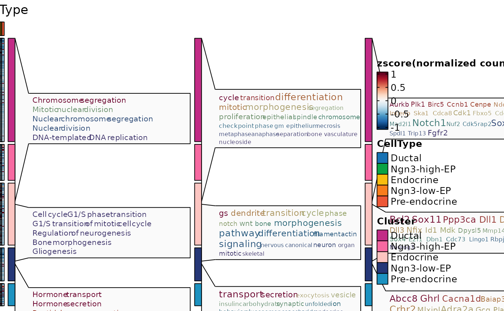
ht3$plot
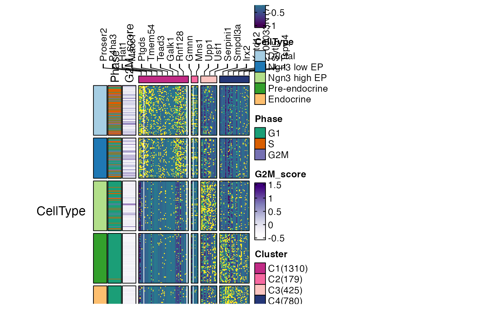
ht4 <- FeatureHeatmap(
pancreas_sub,
features = de_filter$gene,
n_split = 4,
group.by = "CellType",
heatmap_palette = "viridis",
feature_annotation = c("TF", "CSPA"),
feature_annotation_palcolor = list(
c("gold", "steelblue"), c("forestgreen")
),
cell_annotation = c("Phase", "G2M_score"),
cell_annotation_palette = c("Dark2", "Purples")
)
#> Error in FeatureHeatmap(pancreas_sub, features = de_filter$gene, n_split = 4, group.by = "CellType", heatmap_palette = "viridis", feature_annotation = c("TF", "CSPA"), feature_annotation_palcolor = list(c("gold", "steelblue"), c("forestgreen")), cell_annotation = c("Phase", "G2M_score"), cell_annotation_palette = c("Dark2", "Purples")): Feature_annotation: TF,CSPA is not in the meta data of the RNA assay in
#> the Seurat object.
ht4$plot
#> Error: object 'ht4' not found
ht5 <- FeatureHeatmap(
pancreas_sub,
features = de_filter$gene,
n_split = 4,
group.by = "CellType",
heatmap_palette = "viridis",
feature_annotation = c("TF", "CSPA"),
feature_annotation_palcolor = list(
c("gold", "steelblue"), c("forestgreen")
),
cell_annotation = c("Phase", "G2M_score"),
cell_annotation_palette = c("Dark2", "Purples"),
flip = TRUE,
column_title_rot = 45
)
#> Error in FeatureHeatmap(pancreas_sub, features = de_filter$gene, n_split = 4, group.by = "CellType", heatmap_palette = "viridis", feature_annotation = c("TF", "CSPA"), feature_annotation_palcolor = list(c("gold", "steelblue"), c("forestgreen")), cell_annotation = c("Phase", "G2M_score"), cell_annotation_palette = c("Dark2", "Purples"), flip = TRUE, column_title_rot = 45): Feature_annotation: TF,CSPA is not in the meta data of the RNA assay in
#> the Seurat object.
ht5$plot
#> Error: object 'ht5' not found
pancreas_sub <- RunSlingshot(
pancreas_sub,
group.by = "SubCellType",
reduction = "UMAP"
)
#> Warning: No shared levels found between `names(values)` of the manual scale and the
#> data's fill values.
#> Warning: No shared levels found between `names(values)` of the manual scale and the
#> data's fill values.
#> Warning: Removed 8 rows containing missing values or values outside the scale range
#> (`geom_path()`).
#> Warning: Removed 8 rows containing missing values or values outside the scale range
#> (`geom_path()`).
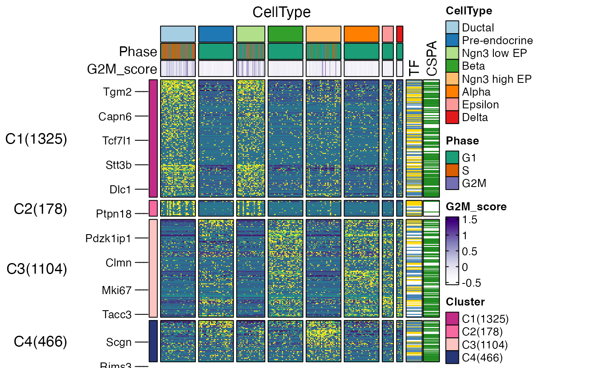
ht6 <- FeatureHeatmap(
pancreas_sub,
features = de_filter$gene,
nlabel = 10,
cell_order = names(sort(pancreas_sub$Lineage1)),
cell_annotation = c("SubCellType", "Lineage1"),
cell_annotation_palette = c("Paired", "cividis")
)
#> 'magick' package is suggested to install to give better rasterization.
#>
#> Set `ht_opt$message = FALSE` to turn off this message.
#> `use_raster` is automatically set to TRUE for a matrix with more than
#> 2000 rows. You can control `use_raster` argument by explicitly setting
#> TRUE/FALSE to it.
#>
#> Set `ht_opt$message = FALSE` to turn off this message.
ht6$plot
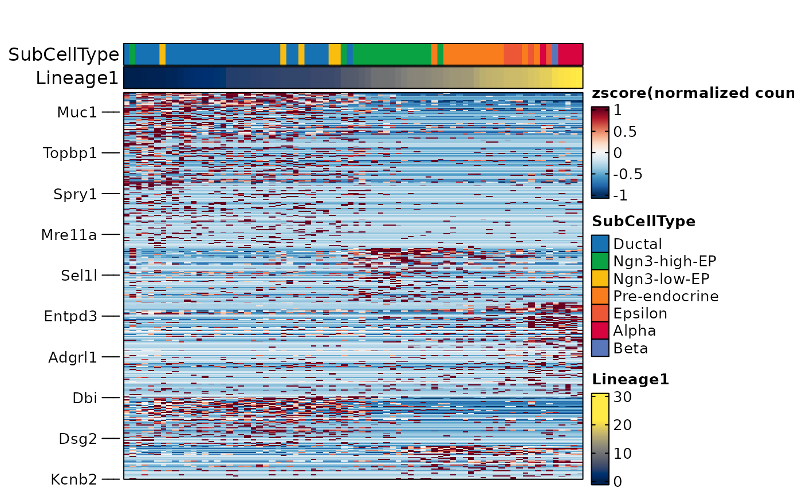
ht2$plot
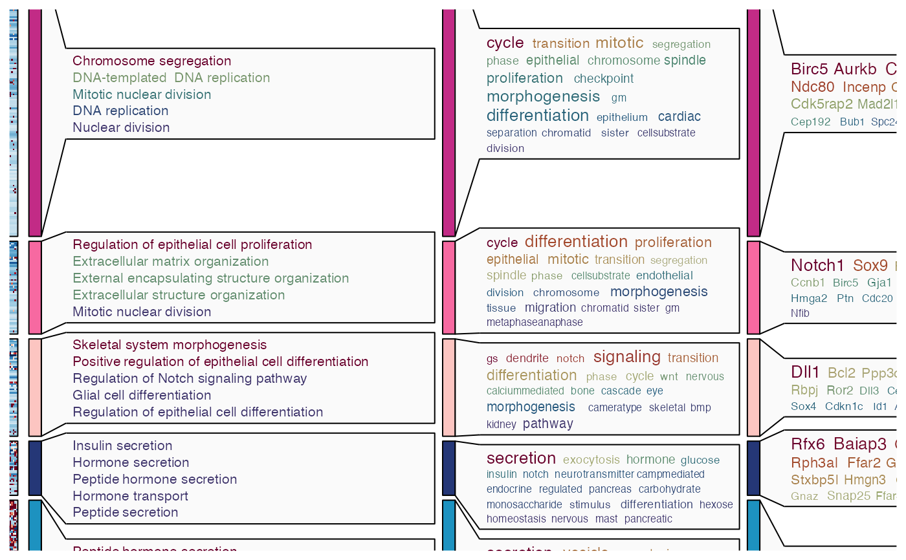
ht3 <- FeatureHeatmap(
pancreas_sub,
features = de_filter$gene,
feature_split = de_filter$group1,
group.by = "CellType",
species = "Mus_musculus",
db = "GO_BP",
anno_terms = TRUE,
anno_keys = TRUE,
anno_features = TRUE
)
#> 'magick' package is suggested to install to give better rasterization.
#>
#> Set `ht_opt$message = FALSE` to turn off this message.
#> ℹ [2025-09-09 14:14:29] Start Enrichment analysis
#> ℹ [2025-09-09 14:14:29] Installing package: clusterProfiler...
#>
#> ✔ All system requirements are already installed.
#>
#> ℹ No downloads are needed
#> ℹ Installing system requirements
#> ℹ Executing `sudo sh -c apt-get -y update`
#> Get:1 file:/etc/apt/apt-mirrors.txt Mirrorlist [144 B]
#> Hit:2 http://azure.archive.ubuntu.com/ubuntu noble InRelease
#> Hit:3 http://azure.archive.ubuntu.com/ubuntu noble-updates InRelease
#> Hit:4 http://azure.archive.ubuntu.com/ubuntu noble-backports InRelease
#> Hit:5 http://azure.archive.ubuntu.com/ubuntu noble-security InRelease
#> Hit:6 https://packages.microsoft.com/repos/azure-cli noble InRelease
#> Hit:7 https://packages.microsoft.com/ubuntu/24.04/prod noble InRelease
#> Reading package lists...
#> ℹ Executing `sudo sh -c apt-get -y install libcurl4-openssl-dev libssl-dev make libglpk-dev libxml2-dev libpng-dev libicu-dev libfontconfig1-dev libfreetype6-dev`
#> Reading package lists...
#> Building dependency tree...
#> Reading state information...
#> libcurl4-openssl-dev is already the newest version (8.5.0-2ubuntu10.6).
#> libssl-dev is already the newest version (3.0.13-0ubuntu3.5).
#> make is already the newest version (4.3-4.1build2).
#> libglpk-dev is already the newest version (5.0-1build2).
#> libxml2-dev is already the newest version (2.9.14+dfsg-1.3ubuntu3.4).
#> libpng-dev is already the newest version (1.6.43-5build1).
#> libicu-dev is already the newest version (74.2-1ubuntu3.1).
#> libfontconfig1-dev is already the newest version (2.15.0-1.1ubuntu2).
#> libfreetype-dev is already the newest version (2.13.2+dfsg-1build3).
#> 0 upgraded, 0 newly installed, 0 to remove and 20 not upgraded.
#> ✔ 1 pkg + 107 deps: kept 107 [5s]
#> ℹ [2025-09-09 14:14:34] All packages installed successfully
#> ℹ [2025-09-09 14:14:34] Species: Mus_musculus
#> ℹ [2025-09-09 14:14:34] Loading cached: GO_BP version: 3.21.0 nterm:15445 created: "2025-09-09 14:07:56"
#> ℹ [2025-09-09 14:14:35] Permform enrichment...
#> ℹ [2025-09-09 14:14:36] Using 1 core
#> ⠙ [2025-09-09 14:14:36] Running [1/5] ETA: 1m
#> ⠹ [2025-09-09 14:14:36] Running [2/5] ETA: 46s
#> ⠸ [2025-09-09 14:14:36] Running [3/5] ETA: 30s
#> ⠼ [2025-09-09 14:14:36] Running [4/5] ETA: 15s
#> ✔ [2025-09-09 14:14:36] Completed 5 tasks in 1m 10.2s
#>
#> ℹ [2025-09-09 14:15:46] Building results
#> ✔ [2025-09-09 14:15:46] Enrichment analysis done
#> ℹ [2025-09-09 14:15:46] Installing package: simplifyEnrichment...
#>
#> → Will install 1 system package:
#> + default-jdk - simona
#> ℹ No downloads are needed
#> ℹ Installing system requirements
#> ℹ Executing `sudo sh -c apt-get -y update`
#> Get:1 file:/etc/apt/apt-mirrors.txt Mirrorlist [144 B]
#> Hit:2 http://azure.archive.ubuntu.com/ubuntu noble InRelease
#> Hit:6 https://packages.microsoft.com/repos/azure-cli noble InRelease
#> Hit:7 https://packages.microsoft.com/ubuntu/24.04/prod noble InRelease
#> Hit:3 http://azure.archive.ubuntu.com/ubuntu noble-updates InRelease
#> Hit:4 http://azure.archive.ubuntu.com/ubuntu noble-backports InRelease
#> Hit:5 http://azure.archive.ubuntu.com/ubuntu noble-security InRelease
#> Reading package lists...
#> ℹ Executing `sudo sh -c apt-get -y install perl libcurl4-openssl-dev libssl-dev make zlib1g-dev libglpk-dev libxml2-dev libpng-dev default-jdk`
#> Reading package lists...
#> Building dependency tree...
#> Reading state information...
#> perl is already the newest version (5.38.2-3.2ubuntu0.2).
#> libcurl4-openssl-dev is already the newest version (8.5.0-2ubuntu10.6).
#> libssl-dev is already the newest version (3.0.13-0ubuntu3.5).
#> make is already the newest version (4.3-4.1build2).
#> zlib1g-dev is already the newest version (1:1.3.dfsg-3.1ubuntu2.1).
#> libglpk-dev is already the newest version (5.0-1build2).
#> libxml2-dev is already the newest version (2.9.14+dfsg-1.3ubuntu3.4).
#> libpng-dev is already the newest version (1.6.43-5build1).
#> The following additional packages will be installed:
#> ca-certificates-java default-jdk-headless default-jre default-jre-headless
#> libatk-wrapper-java libatk-wrapper-java-jni libpcsclite1 libxcb-shape0
#> libxt-dev libxv1 libxxf86dga1 openjdk-21-jdk openjdk-21-jdk-headless
#> openjdk-21-jre openjdk-21-jre-headless x11-utils
#> Suggested packages:
#> pcscd libxt-doc openjdk-21-demo openjdk-21-source visualvm libnss-mdns
#> fonts-ipafont-gothic fonts-ipafont-mincho fonts-wqy-microhei
#> | fonts-wqy-zenhei fonts-indic mesa-utils
#> Recommended packages:
#> luit
#> The following NEW packages will be installed:
#> ca-certificates-java default-jdk default-jdk-headless default-jre
#> default-jre-headless libatk-wrapper-java libatk-wrapper-java-jni
#> libpcsclite1 libxcb-shape0 libxt-dev libxv1 libxxf86dga1 openjdk-21-jdk
#> openjdk-21-jdk-headless openjdk-21-jre openjdk-21-jre-headless x11-utils
#> 0 upgraded, 17 newly installed, 0 to remove and 20 not upgraded.
#> Need to get 132 MB of archives.
#> After this operation, 304 MB of additional disk space will be used.
#> Get:1 file:/etc/apt/apt-mirrors.txt Mirrorlist [144 B]
#> Get:2 http://azure.archive.ubuntu.com/ubuntu noble/main amd64 ca-certificates-java all 20240118 [11.6 kB]
#> Get:3 http://azure.archive.ubuntu.com/ubuntu noble/main amd64 libpcsclite1 amd64 2.0.3-1build1 [21.4 kB]
#> Get:4 http://azure.archive.ubuntu.com/ubuntu noble-updates/main amd64 openjdk-21-jre-headless amd64 21.0.8+9~us1-0ubuntu1~24.04.1 [46.4 MB]
#> Get:5 http://azure.archive.ubuntu.com/ubuntu noble/main amd64 default-jre-headless amd64 2:1.21-75+exp1 [3094 B]
#> Get:6 http://azure.archive.ubuntu.com/ubuntu noble-updates/main amd64 openjdk-21-jre amd64 21.0.8+9~us1-0ubuntu1~24.04.1 [228 kB]
#> Get:7 http://azure.archive.ubuntu.com/ubuntu noble/main amd64 default-jre amd64 2:1.21-75+exp1 [922 B]
#> Get:8 http://azure.archive.ubuntu.com/ubuntu noble-updates/main amd64 openjdk-21-jdk-headless amd64 21.0.8+9~us1-0ubuntu1~24.04.1 [82.7 MB]
#> Get:9 http://azure.archive.ubuntu.com/ubuntu noble/main amd64 default-jdk-headless amd64 2:1.21-75+exp1 [960 B]
#> Get:10 http://azure.archive.ubuntu.com/ubuntu noble-updates/main amd64 openjdk-21-jdk amd64 21.0.8+9~us1-0ubuntu1~24.04.1 [1645 kB]
#> Get:11 http://azure.archive.ubuntu.com/ubuntu noble/main amd64 default-jdk amd64 2:1.21-75+exp1 [926 B]
#> Get:12 http://azure.archive.ubuntu.com/ubuntu noble/main amd64 libxcb-shape0 amd64 1.15-1ubuntu2 [6100 B]
#> Get:13 http://azure.archive.ubuntu.com/ubuntu noble/main amd64 libxv1 amd64 2:1.0.11-1.1build1 [10.7 kB]
#> Get:14 http://azure.archive.ubuntu.com/ubuntu noble/main amd64 libxxf86dga1 amd64 2:1.1.5-1build1 [11.6 kB]
#> Get:15 http://azure.archive.ubuntu.com/ubuntu noble/main amd64 x11-utils amd64 7.7+6build2 [189 kB]
#> Get:16 http://azure.archive.ubuntu.com/ubuntu noble/main amd64 libatk-wrapper-java all 0.40.0-3build2 [54.3 kB]
#> Get:17 http://azure.archive.ubuntu.com/ubuntu noble/main amd64 libatk-wrapper-java-jni amd64 0.40.0-3build2 [46.4 kB]
#> Get:18 http://azure.archive.ubuntu.com/ubuntu noble/main amd64 libxt-dev amd64 1:1.2.1-1.2build1 [394 kB]
#> Fetched 132 MB in 17min 34s (125 kB/s)
#> Selecting previously unselected package ca-certificates-java.
#> (Reading database ...
#> (Reading database ... 5%
(Reading database ... 10%
(Reading database ... 15%
(Reading database ... 20%
(Reading database ... 25%
(Reading database ... 30%
(Reading database ... 35%
(Reading database ... 40%
(Reading database ... 45%
(Reading database ... 50%
(Reading database ... 55%
#> (Reading database ... 60%
#> (Reading database ... 65%
#> (Reading database ... 70%
#> (Reading database ... 75%
#> (Reading database ... 80%
#> (Reading database ... 85%
#> (Reading database ... 90%
#> (Reading database ... 95%
#> (Reading database ... 100%
(Reading database ... 258570 files and directories currently installed.)
#> Preparing to unpack .../00-ca-certificates-java_20240118_all.deb ...
#> Unpacking ca-certificates-java (20240118) ...
#> Selecting previously unselected package libpcsclite1:amd64.
#> Preparing to unpack .../01-libpcsclite1_2.0.3-1build1_amd64.deb ...
#> Unpacking libpcsclite1:amd64 (2.0.3-1build1) ...
#> Selecting previously unselected package openjdk-21-jre-headless:amd64.
#> Preparing to unpack .../02-openjdk-21-jre-headless_21.0.8+9~us1-0ubuntu1~24.04.1_amd64.deb ...
#> Unpacking openjdk-21-jre-headless:amd64 (21.0.8+9~us1-0ubuntu1~24.04.1) ...
#> Selecting previously unselected package default-jre-headless.
#> Preparing to unpack .../03-default-jre-headless_2%3a1.21-75+exp1_amd64.deb ...
#> Unpacking default-jre-headless (2:1.21-75+exp1) ...
#> Selecting previously unselected package openjdk-21-jre:amd64.
#> Preparing to unpack .../04-openjdk-21-jre_21.0.8+9~us1-0ubuntu1~24.04.1_amd64.deb ...
#> Unpacking openjdk-21-jre:amd64 (21.0.8+9~us1-0ubuntu1~24.04.1) ...
#> Selecting previously unselected package default-jre.
#> Preparing to unpack .../05-default-jre_2%3a1.21-75+exp1_amd64.deb ...
#> Unpacking default-jre (2:1.21-75+exp1) ...
#> Selecting previously unselected package openjdk-21-jdk-headless:amd64.
#> Preparing to unpack .../06-openjdk-21-jdk-headless_21.0.8+9~us1-0ubuntu1~24.04.1_amd64.deb ...
#> Unpacking openjdk-21-jdk-headless:amd64 (21.0.8+9~us1-0ubuntu1~24.04.1) ...
#> Selecting previously unselected package default-jdk-headless.
#> Preparing to unpack .../07-default-jdk-headless_2%3a1.21-75+exp1_amd64.deb ...
#> Unpacking default-jdk-headless (2:1.21-75+exp1) ...
#> Selecting previously unselected package openjdk-21-jdk:amd64.
#> Preparing to unpack .../08-openjdk-21-jdk_21.0.8+9~us1-0ubuntu1~24.04.1_amd64.deb ...
#> Unpacking openjdk-21-jdk:amd64 (21.0.8+9~us1-0ubuntu1~24.04.1) ...
#> Selecting previously unselected package default-jdk.
#> Preparing to unpack .../09-default-jdk_2%3a1.21-75+exp1_amd64.deb ...
#> Unpacking default-jdk (2:1.21-75+exp1) ...
#> Selecting previously unselected package libxcb-shape0:amd64.
#> Preparing to unpack .../10-libxcb-shape0_1.15-1ubuntu2_amd64.deb ...
#> Unpacking libxcb-shape0:amd64 (1.15-1ubuntu2) ...
#> Selecting previously unselected package libxv1:amd64.
#> Preparing to unpack .../11-libxv1_2%3a1.0.11-1.1build1_amd64.deb ...
#> Unpacking libxv1:amd64 (2:1.0.11-1.1build1) ...
#> Selecting previously unselected package libxxf86dga1:amd64.
#> Preparing to unpack .../12-libxxf86dga1_2%3a1.1.5-1build1_amd64.deb ...
#> Unpacking libxxf86dga1:amd64 (2:1.1.5-1build1) ...
#> Selecting previously unselected package x11-utils.
#> Preparing to unpack .../13-x11-utils_7.7+6build2_amd64.deb ...
#> Unpacking x11-utils (7.7+6build2) ...
#> Selecting previously unselected package libatk-wrapper-java.
#> Preparing to unpack .../14-libatk-wrapper-java_0.40.0-3build2_all.deb ...
#> Unpacking libatk-wrapper-java (0.40.0-3build2) ...
#> Selecting previously unselected package libatk-wrapper-java-jni:amd64.
#> Preparing to unpack .../15-libatk-wrapper-java-jni_0.40.0-3build2_amd64.deb ...
#> Unpacking libatk-wrapper-java-jni:amd64 (0.40.0-3build2) ...
#> Selecting previously unselected package libxt-dev:amd64.
#> Preparing to unpack .../16-libxt-dev_1%3a1.2.1-1.2build1_amd64.deb ...
#> Unpacking libxt-dev:amd64 (1:1.2.1-1.2build1) ...
#> Setting up libxcb-shape0:amd64 (1.15-1ubuntu2) ...
#> Setting up libxxf86dga1:amd64 (2:1.1.5-1build1) ...
#> Setting up libxt-dev:amd64 (1:1.2.1-1.2build1) ...
#> Setting up libxv1:amd64 (2:1.0.11-1.1build1) ...
#> Setting up libpcsclite1:amd64 (2.0.3-1build1) ...
#> Setting up x11-utils (7.7+6build2) ...
#> Setting up libatk-wrapper-java (0.40.0-3build2) ...
#> Setting up ca-certificates-java (20240118) ...
#> Adding debian:ACCVRAIZ1.pem
#> Adding debian:AC_RAIZ_FNMT-RCM.pem
#> Adding debian:AC_RAIZ_FNMT-RCM_SERVIDORES_SEGUROS.pem
#> Adding debian:ANF_Secure_Server_Root_CA.pem
#> Adding debian:Actalis_Authentication_Root_CA.pem
#> Adding debian:AffirmTrust_Commercial.pem
#> Adding debian:AffirmTrust_Networking.pem
#> Adding debian:AffirmTrust_Premium.pem
#> Adding debian:AffirmTrust_Premium_ECC.pem
#> Adding debian:Amazon_Root_CA_1.pem
#> Adding debian:Amazon_Root_CA_2.pem
#> Adding debian:Amazon_Root_CA_3.pem
#> Adding debian:Amazon_Root_CA_4.pem
#> Adding debian:Atos_TrustedRoot_2011.pem
#> Adding debian:Atos_TrustedRoot_Root_CA_ECC_TLS_2021.pem
#> Adding debian:Atos_TrustedRoot_Root_CA_RSA_TLS_2021.pem
#> Adding debian:Autoridad_de_Certificacion_Firmaprofesional_CIF_A62634068.pem
#> Adding debian:BJCA_Global_Root_CA1.pem
#> Adding debian:BJCA_Global_Root_CA2.pem
#> Adding debian:Baltimore_CyberTrust_Root.pem
#> Adding debian:Buypass_Class_2_Root_CA.pem
#> Adding debian:Buypass_Class_3_Root_CA.pem
#> Adding debian:CA_Disig_Root_R2.pem
#> Adding debian:CFCA_EV_ROOT.pem
#> Adding debian:COMODO_Certification_Authority.pem
#> Adding debian:COMODO_ECC_Certification_Authority.pem
#> Adding debian:COMODO_RSA_Certification_Authority.pem
#> Adding debian:Certainly_Root_E1.pem
#> Adding debian:Certainly_Root_R1.pem
#> Adding debian:Certigna.pem
#> Adding debian:Certigna_Root_CA.pem
#> Adding debian:Certum_EC-384_CA.pem
#> Adding debian:Certum_Trusted_Network_CA.pem
#> Adding debian:Certum_Trusted_Network_CA_2.pem
#> Adding debian:Certum_Trusted_Root_CA.pem
#> Adding debian:CommScope_Public_Trust_ECC_Root-01.pem
#> Adding debian:CommScope_Public_Trust_ECC_Root-02.pem
#> Adding debian:CommScope_Public_Trust_RSA_Root-01.pem
#> Adding debian:CommScope_Public_Trust_RSA_Root-02.pem
#> Adding debian:Comodo_AAA_Services_root.pem
#> Adding debian:D-TRUST_BR_Root_CA_1_2020.pem
#> Adding debian:D-TRUST_EV_Root_CA_1_2020.pem
#> Adding debian:D-TRUST_Root_Class_3_CA_2_2009.pem
#> Adding debian:D-TRUST_Root_Class_3_CA_2_EV_2009.pem
#> Adding debian:DigiCert_Assured_ID_Root_CA.pem
#> Adding debian:DigiCert_Assured_ID_Root_G2.pem
#> Adding debian:DigiCert_Assured_ID_Root_G3.pem
#> Adding debian:DigiCert_Global_Root_CA.pem
#> Adding debian:DigiCert_Global_Root_G2.pem
#> Adding debian:DigiCert_Global_Root_G3.pem
#> Adding debian:DigiCert_High_Assurance_EV_Root_CA.pem
#> Adding debian:DigiCert_TLS_ECC_P384_Root_G5.pem
#> Adding debian:DigiCert_TLS_RSA4096_Root_G5.pem
#> Adding debian:DigiCert_Trusted_Root_G4.pem
#> Adding debian:Entrust.net_Premium_2048_Secure_Server_CA.pem
#> Adding debian:Entrust_Root_Certification_Authority.pem
#> Adding debian:Entrust_Root_Certification_Authority_-_EC1.pem
#> Adding debian:Entrust_Root_Certification_Authority_-_G2.pem
#> Adding debian:Entrust_Root_Certification_Authority_-_G4.pem
#> Adding debian:GDCA_TrustAUTH_R5_ROOT.pem
#> Adding debian:GLOBALTRUST_2020.pem
#> Adding debian:GTS_Root_R1.pem
#> Adding debian:GTS_Root_R2.pem
#> Adding debian:GTS_Root_R3.pem
#> Adding debian:GTS_Root_R4.pem
#> Adding debian:GlobalSign_ECC_Root_CA_-_R4.pem
#> Adding debian:GlobalSign_ECC_Root_CA_-_R5.pem
#> Adding debian:GlobalSign_Root_CA.pem
#> Adding debian:GlobalSign_Root_CA_-_R3.pem
#> Adding debian:GlobalSign_Root_CA_-_R6.pem
#> Adding debian:GlobalSign_Root_E46.pem
#> Adding debian:GlobalSign_Root_R46.pem
#> Adding debian:Go_Daddy_Class_2_CA.pem
#> Adding debian:Go_Daddy_Root_Certificate_Authority_-_G2.pem
#> Adding debian:HARICA_TLS_ECC_Root_CA_2021.pem
#> Adding debian:HARICA_TLS_RSA_Root_CA_2021.pem
#> Adding debian:Hellenic_Academic_and_Research_Institutions_ECC_RootCA_2015.pem
#> Adding debian:Hellenic_Academic_and_Research_Institutions_RootCA_2015.pem
#> Adding debian:HiPKI_Root_CA_-_G1.pem
#> Adding debian:Hongkong_Post_Root_CA_3.pem
#> Adding debian:ISRG_Root_X1.pem
#> Adding debian:ISRG_Root_X2.pem
#> Adding debian:IdenTrust_Commercial_Root_CA_1.pem
#> Adding debian:IdenTrust_Public_Sector_Root_CA_1.pem
#> Adding debian:Izenpe.com.pem
#> Adding debian:Microsec_e-Szigno_Root_CA_2009.pem
#> Adding debian:Microsoft_ECC_Root_Certificate_Authority_2017.pem
#> Adding debian:Microsoft_RSA_Root_Certificate_Authority_2017.pem
#> Adding debian:NAVER_Global_Root_Certification_Authority.pem
#> Adding debian:NetLock_Arany_=Class_Gold=_Főtanúsítvány.pem
#> Adding debian:OISTE_WISeKey_Global_Root_GB_CA.pem
#> Adding debian:OISTE_WISeKey_Global_Root_GC_CA.pem
#> Adding debian:QuoVadis_Root_CA_1_G3.pem
#> Adding debian:QuoVadis_Root_CA_2.pem
#> Adding debian:QuoVadis_Root_CA_2_G3.pem
#> Adding debian:QuoVadis_Root_CA_3.pem
#> Adding debian:QuoVadis_Root_CA_3_G3.pem
#> Adding debian:SSL.com_EV_Root_Certification_Authority_ECC.pem
#> Adding debian:SSL.com_EV_Root_Certification_Authority_RSA_R2.pem
#> Adding debian:SSL.com_Root_Certification_Authority_ECC.pem
#> Adding debian:SSL.com_Root_Certification_Authority_RSA.pem
#> Adding debian:SSL.com_TLS_ECC_Root_CA_2022.pem
#> Adding debian:SSL.com_TLS_RSA_Root_CA_2022.pem
#> Adding debian:SZAFIR_ROOT_CA2.pem
#> Adding debian:Sectigo_Public_Server_Authentication_Root_E46.pem
#> Adding debian:Sectigo_Public_Server_Authentication_Root_R46.pem
#> Adding debian:SecureSign_RootCA11.pem
#> Adding debian:SecureTrust_CA.pem
#> Adding debian:Secure_Global_CA.pem
#> Adding debian:Security_Communication_ECC_RootCA1.pem
#> Adding debian:Security_Communication_RootCA2.pem
#> Adding debian:Security_Communication_RootCA3.pem
#> Adding debian:Security_Communication_Root_CA.pem
#> Adding debian:Starfield_Class_2_CA.pem
#> Adding debian:Starfield_Root_Certificate_Authority_-_G2.pem
#> Adding debian:Starfield_Services_Root_Certificate_Authority_-_G2.pem
#> Adding debian:SwissSign_Gold_CA_-_G2.pem
#> Adding debian:SwissSign_Silver_CA_-_G2.pem
#> Adding debian:T-TeleSec_GlobalRoot_Class_2.pem
#> Adding debian:T-TeleSec_GlobalRoot_Class_3.pem
#> Adding debian:TUBITAK_Kamu_SM_SSL_Kok_Sertifikasi_-_Surum_1.pem
#> Adding debian:TWCA_Global_Root_CA.pem
#> Adding debian:TWCA_Root_Certification_Authority.pem
#> Adding debian:TeliaSonera_Root_CA_v1.pem
#> Adding debian:Telia_Root_CA_v2.pem
#> Adding debian:TrustAsia_Global_Root_CA_G3.pem
#> Adding debian:TrustAsia_Global_Root_CA_G4.pem
#> Adding debian:Trustwave_Global_Certification_Authority.pem
#> Adding debian:Trustwave_Global_ECC_P256_Certification_Authority.pem
#> Adding debian:Trustwave_Global_ECC_P384_Certification_Authority.pem
#> Adding debian:TunTrust_Root_CA.pem
#> Adding debian:UCA_Extended_Validation_Root.pem
#> Adding debian:UCA_Global_G2_Root.pem
#> Adding debian:USERTrust_ECC_Certification_Authority.pem
#> Adding debian:USERTrust_RSA_Certification_Authority.pem
#> Adding debian:XRamp_Global_CA_Root.pem
#> Adding debian:certSIGN_ROOT_CA.pem
#> Adding debian:certSIGN_Root_CA_G2.pem
#> Adding debian:e-Szigno_Root_CA_2017.pem
#> Adding debian:ePKI_Root_Certification_Authority.pem
#> Adding debian:emSign_ECC_Root_CA_-_C3.pem
#> Adding debian:emSign_ECC_Root_CA_-_G3.pem
#> Adding debian:emSign_Root_CA_-_C1.pem
#> Adding debian:emSign_Root_CA_-_G1.pem
#> Adding debian:vTrus_ECC_Root_CA.pem
#> Adding debian:vTrus_Root_CA.pem
#> done.
#> Setting up openjdk-21-jre-headless:amd64 (21.0.8+9~us1-0ubuntu1~24.04.1) ...
#> Setting up libatk-wrapper-java-jni:amd64 (0.40.0-3build2) ...
#> Processing triggers for hicolor-icon-theme (0.17-2) ...
#> Processing triggers for libc-bin (2.39-0ubuntu8.5) ...
#> Processing triggers for man-db (2.12.0-4build2) ...
#> Processing triggers for ca-certificates-java (20240118) ...
#> done.
#> Setting up openjdk-21-jre:amd64 (21.0.8+9~us1-0ubuntu1~24.04.1) ...
#> Setting up openjdk-21-jdk-headless:amd64 (21.0.8+9~us1-0ubuntu1~24.04.1) ...
#> Setting up default-jre-headless (2:1.21-75+exp1) ...
#> Setting up default-jre (2:1.21-75+exp1) ...
#> Setting up openjdk-21-jdk:amd64 (21.0.8+9~us1-0ubuntu1~24.04.1) ...
#> Setting up default-jdk-headless (2:1.21-75+exp1) ...
#> Setting up default-jdk (2:1.21-75+exp1) ...
#> Running kernel seems to be up-to-date.
#>
#> Restarting services...
#> Service restarts being deferred:
#> systemctl restart hosted-compute-agent.service
#>
#> No containers need to be restarted.
#>
#> No user sessions are running outdated binaries.
#>
#> No VM guests are running outdated hypervisor (qemu) binaries on this host.
#> ℹ Executing `sudo sh -c R CMD javareconf`
#> Java interpreter : /usr/lib/jvm/temurin-17-jdk-amd64/bin/java
#> Java version : 17.0.16
#> Java home path : /usr/lib/jvm/temurin-17-jdk-amd64
#> Java compiler : /usr/lib/jvm/temurin-17-jdk-amd64/bin/javac
#> Java headers gen.: /usr/bin/javah
#> Java archive tool: /usr/lib/jvm/temurin-17-jdk-amd64/bin/jar
#> trying to compile and link a JNI program
#> detected JNI cpp flags : -I$(JAVA_HOME)/include -I$(JAVA_HOME)/include/linux
#> detected JNI linker flags : -L$(JAVA_HOME)/lib/server -ljvm
#> using C compiler: ‘gcc (Ubuntu 13.3.0-6ubuntu2~24.04) 13.3.0’
#> gcc -std=gnu2x -I"/opt/R/4.5.1/lib/R/include" -DNDEBUG -I/usr/lib/jvm/temurin-17-jdk-amd64/include -I/usr/lib/jvm/temurin-17-jdk-amd64/include/linux -I/usr/local/include -fpic -g -O2 -c conftest.c -o conftest.o
#> gcc -std=gnu2x -shared -L/opt/R/4.5.1/lib/R/lib -L/usr/local/lib -o conftest.so conftest.o -L/usr/lib/jvm/temurin-17-jdk-amd64/lib/server -ljvm -L/opt/R/4.5.1/lib/R/lib -lR
#> JAVA_HOME : /usr/lib/jvm/temurin-17-jdk-amd64
#> Java library path: $(JAVA_HOME)/lib/server
#> JNI cpp flags : -I$(JAVA_HOME)/include -I$(JAVA_HOME)/include/linux
#> JNI linker flags : -L$(JAVA_HOME)/lib/server -ljvm
#> Updating Java configuration in /opt/R/4.5.1/lib/R
#> Done.
#> ✔ 1 pkg + 81 deps: kept 81 [17m 59.8s]
#> ℹ [2025-09-09 14:33:46] All packages installed successfully
#> `use_raster` is automatically set to TRUE for a matrix with more than
#> 2000 rows. You can control `use_raster` argument by explicitly setting
#> TRUE/FALSE to it.
#>
#> Set `ht_opt$message = FALSE` to turn off this message.
#> ℹ [2025-09-09 14:34:26] The size of the heatmap is fixed because certain elements are not scalable.
#> ℹ [2025-09-09 14:34:26] The width and height of the heatmap are determined by the size of the current viewport.
#> ℹ [2025-09-09 14:34:26] If you want to have more control over the size, you can manually set the parameters 'width' and 'height'.
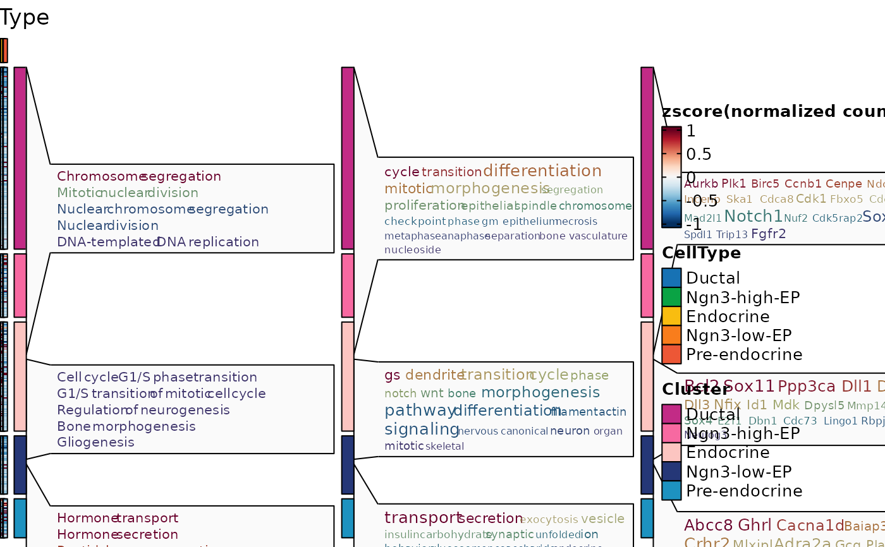
ht3$plot
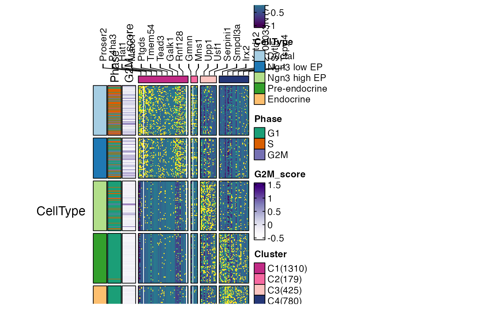
ht4 <- FeatureHeatmap(
pancreas_sub,
features = de_filter$gene,
n_split = 4,
group.by = "CellType",
heatmap_palette = "viridis",
feature_annotation = c("TF", "CSPA"),
feature_annotation_palcolor = list(
c("gold", "steelblue"), c("forestgreen")
),
cell_annotation = c("Phase", "G2M_score"),
cell_annotation_palette = c("Dark2", "Purples")
)
#> Error in FeatureHeatmap(pancreas_sub, features = de_filter$gene, n_split = 4, group.by = "CellType", heatmap_palette = "viridis", feature_annotation = c("TF", "CSPA"), feature_annotation_palcolor = list(c("gold", "steelblue"), c("forestgreen")), cell_annotation = c("Phase", "G2M_score"), cell_annotation_palette = c("Dark2", "Purples")): Feature_annotation: TF,CSPA is not in the meta data of the RNA assay in
#> the Seurat object.
ht4$plot
#> Error: object 'ht4' not found
ht5 <- FeatureHeatmap(
pancreas_sub,
features = de_filter$gene,
n_split = 4,
group.by = "CellType",
heatmap_palette = "viridis",
feature_annotation = c("TF", "CSPA"),
feature_annotation_palcolor = list(
c("gold", "steelblue"), c("forestgreen")
),
cell_annotation = c("Phase", "G2M_score"),
cell_annotation_palette = c("Dark2", "Purples"),
flip = TRUE,
column_title_rot = 45
)
#> Error in FeatureHeatmap(pancreas_sub, features = de_filter$gene, n_split = 4, group.by = "CellType", heatmap_palette = "viridis", feature_annotation = c("TF", "CSPA"), feature_annotation_palcolor = list(c("gold", "steelblue"), c("forestgreen")), cell_annotation = c("Phase", "G2M_score"), cell_annotation_palette = c("Dark2", "Purples"), flip = TRUE, column_title_rot = 45): Feature_annotation: TF,CSPA is not in the meta data of the RNA assay in
#> the Seurat object.
ht5$plot
#> Error: object 'ht5' not found
pancreas_sub <- RunSlingshot(
pancreas_sub,
group.by = "SubCellType",
reduction = "UMAP"
)
#> Warning: No shared levels found between `names(values)` of the manual scale and the
#> data's fill values.
#> Warning: No shared levels found between `names(values)` of the manual scale and the
#> data's fill values.
#> Warning: Removed 8 rows containing missing values or values outside the scale range
#> (`geom_path()`).
#> Warning: Removed 8 rows containing missing values or values outside the scale range
#> (`geom_path()`).
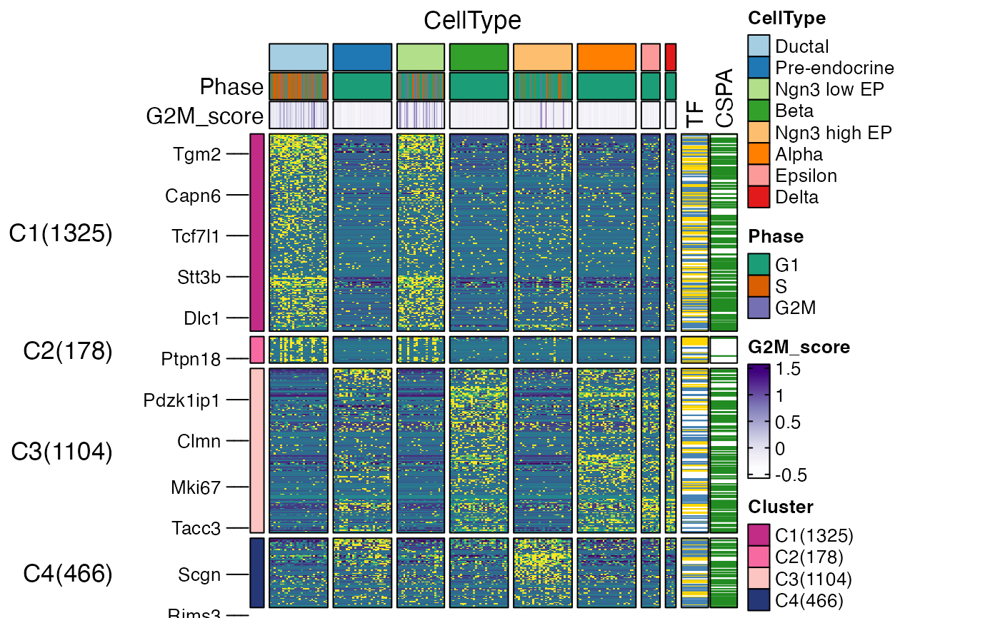
ht6 <- FeatureHeatmap(
pancreas_sub,
features = de_filter$gene,
nlabel = 10,
cell_order = names(sort(pancreas_sub$Lineage1)),
cell_annotation = c("SubCellType", "Lineage1"),
cell_annotation_palette = c("Paired", "cividis")
)
#> 'magick' package is suggested to install to give better rasterization.
#>
#> Set `ht_opt$message = FALSE` to turn off this message.
#> `use_raster` is automatically set to TRUE for a matrix with more than
#> 2000 rows. You can control `use_raster` argument by explicitly setting
#> TRUE/FALSE to it.
#>
#> Set `ht_opt$message = FALSE` to turn off this message.
ht6$plot
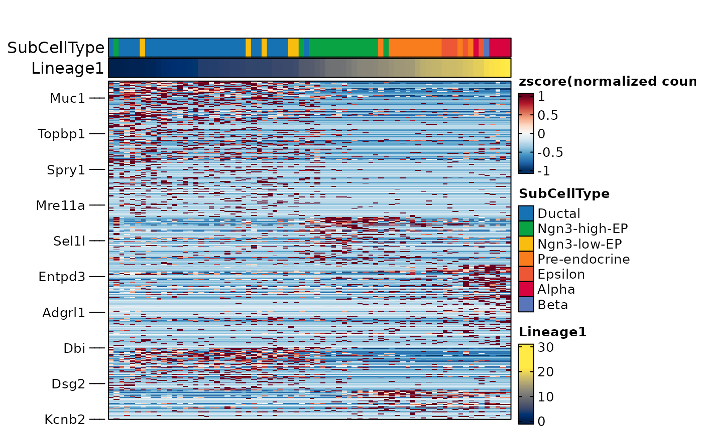